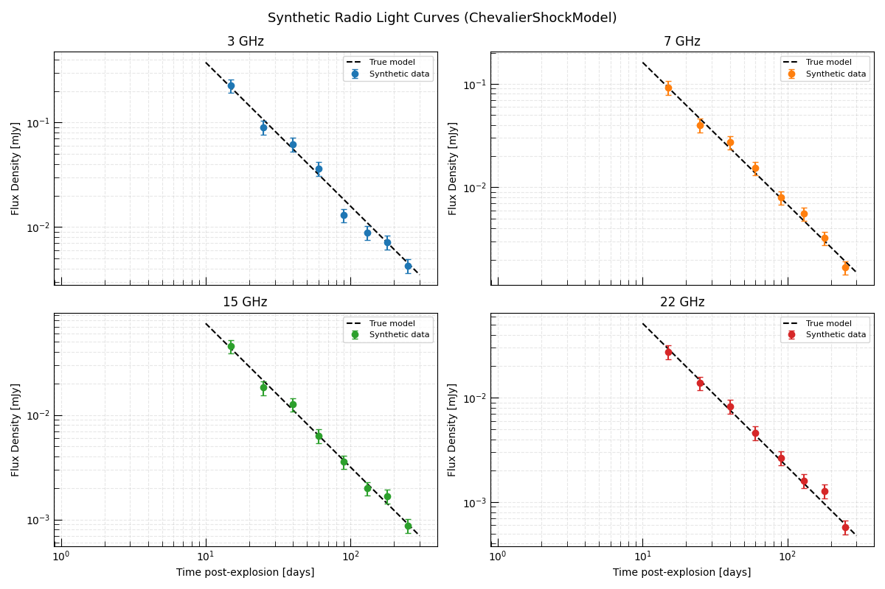
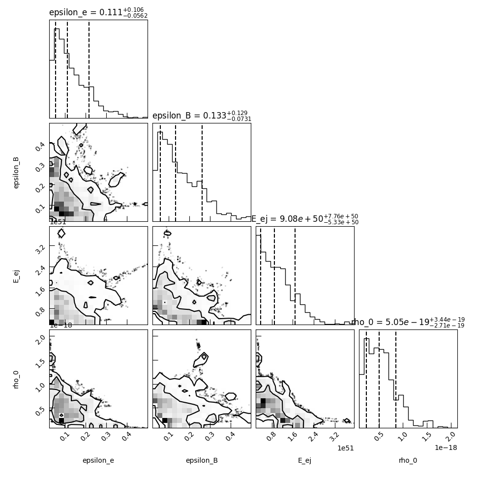
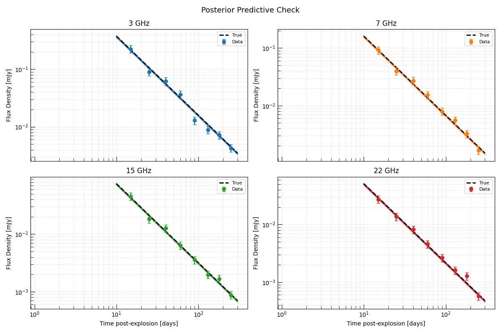

Note
Go to the end to download the full example code.
Inferring Physical Shock Parameters from a Radio Supernova#
This example demonstrates the full science-grade inference workflow for recovering the astrophysical parameters of a radio supernova from multi-frequency radio observations.
The goal is to directly infer the progenitor’s mass-loss history and the supernova’s explosion energy from radio data — parameters that probe the progenitor star decades before the explosion.
The Physical Model#
We use ChevalierShockModel, which
implements the Chevalier (1982) self-similar solution for a supernova shock
expanding into a wind-stratified CSM. The model computes the synchrotron flux
density at a given frequency and time directly from six physical parameters:
Explosion / ejecta parameters:
\(E_{\rm ej}\) — total kinetic energy of the ejecta [erg]
\(M_{\rm ej}\) — ejecta mass [\(M_\odot\)]
\(n\) — outer ejecta density power-law index
CSM parameters (encoding the progenitor wind):
\(\dot{M}\) — progenitor mass-loss rate [\(M_\odot/{\rm yr}\)]
\(v_{\rm w}\) — progenitor wind speed [km/s] (together these give the wind density \(\rho_w \propto \dot{M}/v_w r^{-2}\))
Microphysical parameters:
\(\epsilon_e\) — electron energy fraction
\(\epsilon_B\) — magnetic energy fraction
\(p\) — electron energy distribution power-law index
For this example we fix \(n = 10\) (canonical for Type Ibc supernovae), \(M_{\rm ej} = 2 M_\odot\), and \(p = 3\), and infer the remaining four parameters.
Overview#
Simulate synthetic multi-frequency radio light curves using known true parameter values.
Set up an InferenceProblem with physically motivated priors.
Run MCMC to sample the posterior.
Analyze the results — corner plot, posterior predictive check, and physical interpretation.
Relevant API#
ChevalierShockModelInferenceProblemEmceeSampler
Setup#
import matplotlib.pyplot as plt
import numpy as np
from astropy import units as u
from trilobite.models.supernovae.chevalier_shock import ChevalierShockModel
from trilobite.utils.plot_utils import set_plot_style
set_plot_style()
rng = np.random.default_rng(42)
Define True Parameters and Generate Synthetic Observations#
We simulate observations of a radio-bright Type Ibc supernova at 10 Mpc. The true parameters are chosen to represent a moderate mass-loss rate progenitor, similar to observed events like SN 2011dh or SN 2002ap.
We observe at 4 frequencies spanning VLA bands (3, 7, 15, 22 GHz) and 8 epochs from 10 to 200 days post-explosion.
shock_model = ChevalierShockModel()
# ------ True physical parameters ------
true_params = {
"E_ej": 1.0e51 * u.erg, # Kinetic energy
"M_ej": 2.0 * u.Msun, # Ejecta mass (fixed in inference)
"n": 10.0, # Outer ejecta index (fixed)
"s": 2.0, # CSM power-law index (wind; fixed)
"rho_0": 5e-19 * u.g / u.cm**3, # CSM density at 1e14 cm
"delta": 0.0, # Inner ejecta index (fixed)
"epsilon_e": 0.1, # Electron energy fraction
"epsilon_B": 0.1, # Magnetic energy fraction
"p": 3.0, # Electron index (fixed)
"gamma_min": 1.0,
"gamma_max": 1e7,
"f": 0.5,
"theta": np.pi / 2,
"smoothing_s": -0.5,
"D": 10.0, # Distance in Mpc
}
# Observing setup
frequencies = u.Quantity([3.0, 7.0, 15.0, 22.0], u.GHz)
epochs = u.Quantity([15.0, 25.0, 40.0, 60.0, 90.0, 130.0, 180.0, 250.0], u.day)
noise_frac = 0.15
# Generate synthetic light curves
syn_data = {}
for freq in frequencies:
fluxes_t = []
for t in epochs:
variables = {"frequency": freq.to(u.Hz), "time": t.to(u.s)}
flux = shock_model.forward_model(variables, true_params).flux_density.to(u.mJy)
noise = rng.normal() * noise_frac * flux
fluxes_t.append((flux + noise).to(u.mJy))
syn_data[freq.to_value(u.GHz)] = u.Quantity(fluxes_t)
Visualize the Synthetic Light Curves#
colors = ["C0", "C1", "C2", "C3"]
fig, axes = plt.subplots(2, 2, figsize=(12, 8), sharex=True)
axes = axes.flatten()
t_dense = np.geomspace(10.0, 300.0, 200) * u.day
for ax, (freq, color) in zip(axes, zip(frequencies, colors)):
# True model
true_lc = []
for t in t_dense:
v = {"frequency": freq.to(u.Hz), "time": t.to(u.s)}
true_lc.append(shock_model.forward_model(v, true_params).flux_density.to_value(u.mJy))
ax.loglog(t_dense.to_value(u.day), true_lc, color="black", lw=1.5, ls="--", label="True model")
# Observations
obs = syn_data[freq.to_value(u.GHz)]
errs = noise_frac * obs
ax.errorbar(
epochs.to_value(u.day),
obs.to_value(u.mJy),
yerr=errs.to_value(u.mJy),
fmt="o",
color=color,
capsize=3,
ms=6,
label="Synthetic data",
)
ax.set_title(f"{freq.to_value(u.GHz):.0f} GHz")
ax.set_ylabel("Flux Density [mJy]")
ax.legend(fontsize=8)
ax.grid(True, which="both", ls="--", alpha=0.3)
axes[2].set_xlabel("Time post-explosion [days]")
axes[3].set_xlabel("Time post-explosion [days]")
plt.suptitle("Synthetic Radio Light Curves (ChevalierShockModel)", fontsize=13)
plt.tight_layout()
plt.show()

Set Up the Inference Problem#
We infer four physical parameters:
\(E_{\rm ej}\) — total ejecta kinetic energy [erg], log-uniform prior (scale-free quantity, uncertain over orders of magnitude)
\(\rho_0\) — CSM density at 1e14 cm [g/cm³], log-uniform prior (directly related to mass-loss rate)
\(\epsilon_e\) — electron energy fraction, log-uniform prior (typical range 0.01–0.5)
\(\epsilon_B\) — magnetic energy fraction, log-uniform prior
Log-uniform (Jeffreys) priors are appropriate for scale-free parameters whose order of magnitude is uncertain.
The remaining parameters are fixed at their true values.
from astropy.table import Table, vstack
from trilobite.data import InferenceData
from trilobite.data.photometry import RadioPhotometryEpochContainer
from trilobite.inference import GaussianCensoredLikelihood
from trilobite.inference.likelihood.base import GaussianLikelihood
from trilobite.inference.problem import InferenceProblem
from trilobite.inference.sampling.mcmc import EmceeSampler
# Build a stacked multi-frequency, multi-epoch data table
tables = []
for freq in frequencies:
for i, t in enumerate(epochs):
row = Table()
row["freq"] = [freq.to(u.Hz)]
row["time"] = [t.to(u.s)]
obs_f = syn_data[freq.to_value(u.GHz)][i]
row["flux_density"] = [obs_f]
row["flux_density_error"] = [noise_frac * obs_f]
row["flux_upper_limit"] = [np.nan * u.mJy]
tables.append(row)
data_table = vstack(tables)
photometry = RadioPhotometryEpochContainer(data_table)
inference_data = InferenceData.from_table(
shock_model,
photometry.table,
variables={"frequency": "freq", "time": "time"},
observables={
"flux_density": ("flux_density", "flux_density_error", "flux_upper_limit", None),
},
)
likelihood = GaussianCensoredLikelihood(model=shock_model, data=inference_data)
problem = InferenceProblem(likelihood=likelihood)
# Log-uniform priors on scale-free parameters
problem.set_prior("E_ej", "loguniform", lower=1e49 * u.erg, upper=1e53 * u.erg)
problem.set_prior("rho_0", "loguniform", lower=1e-21 * u.g / u.cm**3, upper=1e-17 * u.g / u.cm**3)
problem.set_prior("epsilon_e", "loguniform", lower=0.01, upper=0.5)
problem.set_prior("epsilon_B", "loguniform", lower=0.01, upper=0.5)
# Set initial values within the prior bounds (required for sampler validation)
problem.parameters["E_ej"].initial_value = 1e51 * u.erg
problem.parameters["rho_0"].initial_value = 5e-19 * u.g / u.cm**3
problem.parameters["epsilon_e"].initial_value = 0.1
problem.parameters["epsilon_B"].initial_value = 0.1
# Fix all other parameters. Pass Quantities directly so that the initial_value
# setter can convert to the model's base units (e.g. M_ej in g, not M_sun).
for name in ["M_ej", "n", "s", "delta", "p", "gamma_min", "gamma_max", "f", "theta", "smoothing_s", "D"]:
problem.parameters[name].initial_value = true_params[name]
problem.parameters[name].freeze = True
print("Free parameters:")
for name, par in problem.parameters.items():
if not par.freeze:
print(f" {name}")
/home/runner/work/Triceratops/Triceratops/docs/source/galleries/inference/plot_shock_parameter_inference.py:209: DeprecationWarning: RadioPhotometryEpochContainer is deprecated and will be removed in a future release. Use RadioPhotometryEpoch instead.
photometry = RadioPhotometryEpochContainer(data_table)
Free parameters:
epsilon_e
epsilon_B
E_ej
rho_0
Run MCMC#
We run the MCMC with 32 walkers for 15,000 steps. In a real analysis you would check convergence using the trace plots and autocorrelation lengths.
sampler = EmceeSampler(problem, n_walkers=32)
result = sampler.run(15_000, progress=True)
samples = result.get_flat_samples(burn=5000, thin=10)
print(f"\nPosterior samples: {samples.shape[0]}")
0% | | 🦖 0/15000 [00:00<?, ?it/s]
0% | | 🦖 10/15000 [00:00<02:30, 99.51it/s]
0% | | 🦖 20/15000 [00:00<02:30, 99.56it/s]
0% | | 🦖 31/15000 [00:00<02:29, 100.01it/s]
0% | | 🦖 42/15000 [00:00<02:28, 100.69it/s]
0% | | 🦖 53/15000 [00:00<02:30, 99.43it/s]
0% | | 🦖 64/15000 [00:00<02:29, 100.04it/s]
0% | | 🦖 75/15000 [00:00<02:28, 100.66it/s]
1% | | 🦖 86/15000 [00:00<02:27, 101.20it/s]
1% | | 🦖 97/15000 [00:00<02:26, 101.69it/s]
1% | | 🦖 108/15000 [00:01<02:26, 101.91it/s]
1% | | 🦖 119/15000 [00:01<02:25, 102.29it/s]
1% | | 🦖 130/15000 [00:01<02:24, 102.58it/s]
1% | | 🦖 141/15000 [00:01<02:24, 103.04it/s]
1% | | 🦖 152/15000 [00:01<02:23, 103.53it/s]
1% | | 🦖 163/15000 [00:01<02:23, 103.28it/s]
1% | | 🦖 174/15000 [00:01<02:23, 103.57it/s]
1% | | 🦖 185/15000 [00:01<02:22, 104.27it/s]
1% |▏ | 🦖 196/15000 [00:01<02:21, 104.49it/s]
1% |▏ | 🦖 207/15000 [00:02<02:21, 104.74it/s]
1% |▏ | 🦖 218/15000 [00:02<02:20, 105.40it/s]
2% |▏ | 🦖 229/15000 [00:02<02:19, 105.53it/s]
2% |▏ | 🦖 240/15000 [00:02<02:19, 105.74it/s]
2% |▏ | 🦖 251/15000 [00:02<02:18, 106.12it/s]
2% |▏ | 🦖 262/15000 [00:02<02:18, 106.36it/s]
2% |▏ | 🦖 273/15000 [00:02<02:20, 105.16it/s]
2% |▏ | 🦖 284/15000 [00:02<02:18, 106.00it/s]
2% |▏ | 🦖 295/15000 [00:02<02:17, 106.86it/s]
2% |▏ | 🦖 307/15000 [00:02<02:16, 107.79it/s]
2% |▏ | 🦖 318/15000 [00:03<02:15, 108.43it/s]
2% |▏ | 🦖 330/15000 [00:03<02:13, 109.64it/s]
2% |▏ | 🦖 341/15000 [00:03<02:13, 109.66it/s]
2% |▏ | 🦖 353/15000 [00:03<02:12, 110.43it/s]
2% |▏ | 🦖 365/15000 [00:03<02:12, 110.31it/s]
3% |▎ | 🦖 377/15000 [00:03<02:11, 111.24it/s]
3% |▎ | 🦖 389/15000 [00:03<02:12, 110.07it/s]
3% |▎ | 🦖 401/15000 [00:03<02:12, 109.83it/s]
3% |▎ | 🦖 412/15000 [00:03<02:12, 109.76it/s]
3% |▎ | 🦖 424/15000 [00:04<02:11, 110.51it/s]
3% |▎ | 🦖 436/15000 [00:04<02:11, 110.53it/s]
3% |▎ | 🦖 448/15000 [00:04<02:11, 110.64it/s]
3% |▎ | 🦖 460/15000 [00:04<02:11, 110.81it/s]
3% |▎ | 🦖 472/15000 [00:04<02:11, 110.88it/s]
3% |▎ | 🦖 484/15000 [00:04<02:10, 111.02it/s]
3% |▎ | 🦖 496/15000 [00:04<02:10, 111.11it/s]
3% |▎ | 🦖 508/15000 [00:04<02:10, 111.27it/s]
3% |▎ | 🦖 520/15000 [00:04<02:10, 110.58it/s]
4% |▎ | 🦖 532/15000 [00:04<02:09, 111.57it/s]
4% |▎ | 🦖 544/15000 [00:05<02:10, 110.63it/s]
4% |▎ | 🦖 556/15000 [00:05<02:10, 111.03it/s]
4% |▍ | 🦖 568/15000 [00:05<02:09, 111.81it/s]
4% |▍ | 🦖 580/15000 [00:05<02:08, 111.92it/s]
4% |▍ | 🦖 592/15000 [00:05<02:08, 112.34it/s]
4% |▍ | 🦖 604/15000 [00:05<02:06, 113.54it/s]
4% |▍ | 🦖 616/15000 [00:05<02:07, 112.65it/s]
4% |▍ | 🦖 628/15000 [00:05<02:08, 112.12it/s]
4% |▍ | 🦖 640/15000 [00:05<02:07, 112.33it/s]
4% |▍ | 🦖 652/15000 [00:06<02:08, 111.83it/s]
4% |▍ | 🦖 664/15000 [00:06<02:07, 112.03it/s]
5% |▍ | 🦖 676/15000 [00:06<02:07, 112.28it/s]
5% |▍ | 🦖 688/15000 [00:06<02:07, 112.14it/s]
5% |▍ | 🦖 700/15000 [00:06<02:08, 111.58it/s]
5% |▍ | 🦖 712/15000 [00:06<02:07, 111.64it/s]
5% |▍ | 🦖 724/15000 [00:06<02:07, 111.56it/s]
5% |▍ | 🦖 736/15000 [00:06<02:08, 111.20it/s]
5% |▍ | 🦖 748/15000 [00:06<02:07, 111.67it/s]
5% |▌ | 🦖 760/15000 [00:07<02:06, 112.60it/s]
5% |▌ | 🦖 772/15000 [00:07<02:05, 113.48it/s]
5% |▌ | 🦖 784/15000 [00:07<02:05, 113.62it/s]
5% |▌ | 🦖 796/15000 [00:07<02:04, 113.79it/s]
5% |▌ | 🦖 808/15000 [00:07<02:05, 112.81it/s]
5% |▌ | 🦖 820/15000 [00:07<02:04, 113.75it/s]
6% |▌ | 🦖 832/15000 [00:07<02:05, 113.33it/s]
6% |▌ | 🦖 844/15000 [00:07<02:04, 113.53it/s]
6% |▌ | 🦖 856/15000 [00:07<02:04, 113.74it/s]
6% |▌ | 🦖 868/15000 [00:07<02:11, 107.54it/s]
6% |▌ | 🦖 880/15000 [00:08<02:08, 109.60it/s]
6% |▌ | 🦖 892/15000 [00:08<02:07, 110.30it/s]
6% |▌ | 🦖 904/15000 [00:08<02:06, 111.43it/s]
6% |▌ | 🦖 916/15000 [00:08<02:05, 111.93it/s]
6% |▌ | 🦖 928/15000 [00:08<02:04, 112.77it/s]
6% |▋ | 🦖 940/15000 [00:08<02:03, 113.69it/s]
6% |▋ | 🦖 952/15000 [00:08<02:03, 114.00it/s]
6% |▋ | 🦖 964/15000 [00:08<02:03, 113.79it/s]
7% |▋ | 🦖 976/15000 [00:08<02:03, 113.27it/s]
7% |▋ | 🦖 988/15000 [00:09<02:04, 112.52it/s]
7% |▋ | 🦖 1000/15000 [00:09<02:04, 112.37it/s]
7% |▋ | 🦖 1012/15000 [00:09<02:03, 113.41it/s]
7% |▋ | 🦖 1024/15000 [00:09<02:03, 113.41it/s]
7% |▋ | 🦖 1036/15000 [00:09<02:01, 114.64it/s]
7% |▋ | 🦖 1048/15000 [00:09<02:01, 115.05it/s]
7% |▋ | 🦖 1060/15000 [00:09<02:00, 115.98it/s]
7% |▋ | 🦖 1072/15000 [00:09<02:00, 115.83it/s]
7% |▋ | 🦖 1084/15000 [00:09<01:59, 116.35it/s]
7% |▋ | 🦖 1096/15000 [00:09<02:01, 114.70it/s]
7% |▋ | 🦖 1108/15000 [00:10<02:01, 114.17it/s]
7% |▋ | 🦖 1120/15000 [00:10<02:01, 114.60it/s]
8% |▊ | 🦖 1132/15000 [00:10<02:02, 113.62it/s]
8% |▊ | 🦖 1144/15000 [00:10<02:01, 114.08it/s]
8% |▊ | 🦖 1156/15000 [00:10<02:02, 113.10it/s]
8% |▊ | 🦖 1168/15000 [00:10<02:01, 114.09it/s]
8% |▊ | 🦖 1180/15000 [00:10<02:01, 113.69it/s]
8% |▊ | 🦖 1192/15000 [00:10<02:00, 114.53it/s]
8% |▊ | 🦖 1204/15000 [00:10<02:00, 114.54it/s]
8% |▊ | 🦖 1217/15000 [00:11<01:58, 116.43it/s]
8% |▊ | 🦖 1229/15000 [00:11<01:58, 115.99it/s]
8% |▊ | 🦖 1241/15000 [00:11<01:58, 115.80it/s]
8% |▊ | 🦖 1253/15000 [00:11<01:58, 116.17it/s]
8% |▊ | 🦖 1265/15000 [00:11<01:57, 116.95it/s]
9% |▊ | 🦖 1277/15000 [00:11<01:57, 116.37it/s]
9% |▊ | 🦖 1289/15000 [00:11<01:57, 116.99it/s]
9% |▊ | 🦖 1301/15000 [00:11<01:57, 116.81it/s]
9% |▉ | 🦖 1313/15000 [00:11<01:56, 117.17it/s]
9% |▉ | 🦖 1325/15000 [00:11<01:57, 116.14it/s]
9% |▉ | 🦖 1337/15000 [00:12<01:57, 116.76it/s]
9% |▉ | 🦖 1349/15000 [00:12<01:58, 115.64it/s]
9% |▉ | 🦖 1361/15000 [00:12<01:58, 114.98it/s]
9% |▉ | 🦖 1373/15000 [00:12<01:57, 115.88it/s]
9% |▉ | 🦖 1386/15000 [00:12<01:56, 117.10it/s]
9% |▉ | 🦖 1398/15000 [00:12<01:56, 116.78it/s]
9% |▉ | 🦖 1411/15000 [00:12<01:54, 118.45it/s]
9% |▉ | 🦖 1423/15000 [00:12<01:54, 118.56it/s]
10% |▉ | 🦖 1435/15000 [00:12<01:54, 118.72it/s]
10% |▉ | 🦖 1447/15000 [00:12<01:53, 119.04it/s]
10% |▉ | 🦖 1459/15000 [00:13<01:54, 118.08it/s]
10% |▉ | 🦖 1471/15000 [00:13<01:54, 118.60it/s]
10% |▉ | 🦖 1483/15000 [00:13<01:53, 119.01it/s]
10% |▉ | 🦖 1495/15000 [00:13<01:54, 118.38it/s]
10% |█ | 🦖 1507/15000 [00:13<01:54, 118.21it/s]
10% |█ | 🦖 1520/15000 [00:13<01:53, 119.04it/s]
10% |█ | 🦖 1532/15000 [00:13<01:55, 116.41it/s]
10% |█ | 🦖 1544/15000 [00:13<01:55, 116.90it/s]
10% |█ | 🦖 1557/15000 [00:13<01:53, 118.20it/s]
10% |█ | 🦖 1569/15000 [00:14<01:53, 118.26it/s]
11% |█ | 🦖 1582/15000 [00:14<01:52, 118.87it/s]
11% |█ | 🦖 1594/15000 [00:14<01:52, 118.74it/s]
11% |█ | 🦖 1607/15000 [00:14<01:51, 120.25it/s]
11% |█ | 🦖 1620/15000 [00:14<01:50, 121.38it/s]
11% |█ | 🦖 1633/15000 [00:14<01:50, 120.86it/s]
11% |█ | 🦖 1646/15000 [00:14<01:51, 119.67it/s]
11% |█ | 🦖 1658/15000 [00:14<01:52, 118.69it/s]
11% |█ | 🦖 1670/15000 [00:14<01:53, 117.72it/s]
11% |█ | 🦖 1682/15000 [00:14<01:53, 117.64it/s]
11% |█▏ | 🦖 1694/15000 [00:15<01:52, 118.27it/s]
11% |█▏ | 🦖 1706/15000 [00:15<01:52, 118.48it/s]
11% |█▏ | 🦖 1718/15000 [00:15<01:51, 118.87it/s]
12% |█▏ | 🦖 1730/15000 [00:15<01:51, 118.90it/s]
12% |█▏ | 🦖 1742/15000 [00:15<01:51, 118.42it/s]
12% |█▏ | 🦖 1754/15000 [00:15<01:52, 117.60it/s]
12% |█▏ | 🦖 1767/15000 [00:15<01:51, 118.55it/s]
12% |█▏ | 🦖 1779/15000 [00:15<01:51, 118.72it/s]
12% |█▏ | 🦖 1792/15000 [00:15<01:50, 119.35it/s]
12% |█▏ | 🦖 1804/15000 [00:16<01:50, 118.95it/s]
12% |█▏ | 🦖 1816/15000 [00:16<01:51, 118.57it/s]
12% |█▏ | 🦖 1828/15000 [00:16<01:51, 117.92it/s]
12% |█▏ | 🦖 1840/15000 [00:16<01:51, 117.61it/s]
12% |█▏ | 🦖 1852/15000 [00:16<01:51, 117.88it/s]
12% |█▏ | 🦖 1865/15000 [00:16<01:50, 118.77it/s]
13% |█▎ | 🦖 1877/15000 [00:16<01:50, 118.49it/s]
13% |█▎ | 🦖 1889/15000 [00:16<01:50, 118.68it/s]
13% |█▎ | 🦖 1901/15000 [00:16<01:50, 118.32it/s]
13% |█▎ | 🦖 1913/15000 [00:16<01:51, 117.41it/s]
13% |█▎ | 🦖 1926/15000 [00:17<01:49, 119.78it/s]
13% |█▎ | 🦖 1938/15000 [00:17<01:49, 119.40it/s]
13% |█▎ | 🦖 1950/15000 [00:17<01:49, 118.88it/s]
13% |█▎ | 🦖 1962/15000 [00:17<01:50, 118.21it/s]
13% |█▎ | 🦖 1974/15000 [00:17<01:50, 117.73it/s]
13% |█▎ | 🦖 1987/15000 [00:17<01:49, 118.31it/s]
13% |█▎ | 🦖 2000/15000 [00:17<01:49, 119.18it/s]
13% |█▎ | 🦖 2012/15000 [00:17<01:49, 118.55it/s]
14% |█▎ | 🦖 2025/15000 [00:17<01:49, 119.02it/s]
14% |█▎ | 🦖 2037/15000 [00:17<01:48, 119.16it/s]
14% |█▎ | 🦖 2050/15000 [00:18<01:48, 119.25it/s]
14% |█▎ | 🦖 2062/15000 [00:18<01:48, 118.90it/s]
14% |█▍ | 🦖 2074/15000 [00:18<01:49, 118.16it/s]
14% |█▍ | 🦖 2086/15000 [00:18<01:49, 117.93it/s]
14% |█▍ | 🦖 2098/15000 [00:18<01:49, 117.56it/s]
14% |█▍ | 🦖 2110/15000 [00:18<01:50, 117.17it/s]
14% |█▍ | 🦖 2122/15000 [00:18<01:49, 117.32it/s]
14% |█▍ | 🦖 2134/15000 [00:18<01:49, 117.25it/s]
14% |█▍ | 🦖 2146/15000 [00:18<01:49, 117.15it/s]
14% |█▍ | 🦖 2158/15000 [00:19<01:49, 117.59it/s]
14% |█▍ | 🦖 2171/15000 [00:19<01:47, 119.30it/s]
15% |█▍ | 🦖 2183/15000 [00:19<01:47, 119.32it/s]
15% |█▍ | 🦖 2195/15000 [00:19<01:48, 117.92it/s]
15% |█▍ | 🦖 2208/15000 [00:19<01:47, 119.32it/s]
15% |█▍ | 🦖 2220/15000 [00:19<01:47, 118.75it/s]
15% |█▍ | 🦖 2232/15000 [00:19<01:47, 118.25it/s]
15% |█▍ | 🦖 2245/15000 [00:19<01:46, 119.72it/s]
15% |█▌ | 🦖 2257/15000 [00:19<01:46, 119.37it/s]
15% |█▌ | 🦖 2270/15000 [00:19<01:46, 119.45it/s]
15% |█▌ | 🦖 2283/15000 [00:20<01:45, 119.99it/s]
15% |█▌ | 🦖 2295/15000 [00:20<01:45, 119.93it/s]
15% |█▌ | 🦖 2307/15000 [00:20<01:45, 119.90it/s]
15% |█▌ | 🦖 2319/15000 [00:20<01:46, 118.97it/s]
16% |█▌ | 🦖 2332/15000 [00:20<01:45, 120.26it/s]
16% |█▌ | 🦖 2345/15000 [00:20<01:47, 118.27it/s]
16% |█▌ | 🦖 2358/15000 [00:20<01:46, 118.74it/s]
16% |█▌ | 🦖 2370/15000 [00:20<01:47, 117.10it/s]
16% |█▌ | 🦖 2382/15000 [00:20<01:47, 117.59it/s]
16% |█▌ | 🦖 2395/15000 [00:20<01:46, 118.56it/s]
16% |█▌ | 🦖 2408/15000 [00:21<01:45, 119.01it/s]
16% |█▌ | 🦖 2420/15000 [00:21<01:45, 119.11it/s]
16% |█▌ | 🦖 2432/15000 [00:21<01:45, 118.72it/s]
16% |█▋ | 🦖 2445/15000 [00:21<01:44, 119.78it/s]
16% |█▋ | 🦖 2458/15000 [00:21<01:44, 120.20it/s]
16% |█▋ | 🦖 2471/15000 [00:21<01:43, 121.00it/s]
17% |█▋ | 🦖 2484/15000 [00:21<01:43, 121.08it/s]
17% |█▋ | 🦖 2497/15000 [00:21<01:43, 121.26it/s]
17% |█▋ | 🦖 2510/15000 [00:21<01:42, 121.39it/s]
17% |█▋ | 🦖 2523/15000 [00:22<01:43, 120.69it/s]
17% |█▋ | 🦖 2536/15000 [00:22<01:43, 120.17it/s]
17% |█▋ | 🦖 2549/15000 [00:22<01:43, 120.23it/s]
17% |█▋ | 🦖 2562/15000 [00:22<01:43, 120.65it/s]
17% |█▋ | 🦖 2575/15000 [00:22<01:43, 120.52it/s]
17% |█▋ | 🦖 2588/15000 [00:22<01:42, 120.97it/s]
17% |█▋ | 🦖 2601/15000 [00:22<01:42, 121.53it/s]
17% |█▋ | 🦖 2614/15000 [00:22<01:42, 121.09it/s]
18% |█▊ | 🦖 2627/15000 [00:22<01:41, 121.46it/s]
18% |█▊ | 🦖 2640/15000 [00:23<01:41, 121.39it/s]
18% |█▊ | 🦖 2653/15000 [00:23<01:40, 122.52it/s]
18% |█▊ | 🦖 2666/15000 [00:23<01:40, 122.35it/s]
18% |█▊ | 🦖 2679/15000 [00:23<01:41, 121.23it/s]
18% |█▊ | 🦖 2692/15000 [00:23<01:41, 121.01it/s]
18% |█▊ | 🦖 2705/15000 [00:23<01:40, 122.44it/s]
18% |█▊ | 🦖 2718/15000 [00:23<01:39, 123.25it/s]
18% |█▊ | 🦖 2731/15000 [00:23<01:40, 122.27it/s]
18% |█▊ | 🦖 2744/15000 [00:23<01:40, 121.39it/s]
18% |█▊ | 🦖 2757/15000 [00:23<01:41, 121.13it/s]
18% |█▊ | 🦖 2770/15000 [00:24<01:41, 120.88it/s]
19% |█▊ | 🦖 2783/15000 [00:24<01:41, 120.28it/s]
19% |█▊ | 🦖 2796/15000 [00:24<01:41, 120.79it/s]
19% |█▊ | 🦖 2809/15000 [00:24<01:40, 121.37it/s]
19% |█▉ | 🦖 2822/15000 [00:24<01:38, 123.01it/s]
19% |█▉ | 🦖 2835/15000 [00:24<01:38, 123.44it/s]
19% |█▉ | 🦖 2848/15000 [00:24<01:38, 123.02it/s]
19% |█▉ | 🦖 2861/15000 [00:24<01:39, 121.91it/s]
19% |█▉ | 🦖 2874/15000 [00:24<01:40, 120.60it/s]
19% |█▉ | 🦖 2887/15000 [00:25<01:39, 121.87it/s]
19% |█▉ | 🦖 2900/15000 [00:25<01:39, 121.75it/s]
19% |█▉ | 🦖 2913/15000 [00:25<01:39, 121.11it/s]
20% |█▉ | 🦖 2926/15000 [00:25<01:40, 120.49it/s]
20% |█▉ | 🦖 2939/15000 [00:25<01:40, 119.53it/s]
20% |█▉ | 🦖 2952/15000 [00:25<01:40, 120.39it/s]
20% |█▉ | 🦖 2965/15000 [00:25<01:39, 120.92it/s]
20% |█▉ | 🦖 2978/15000 [00:25<01:40, 120.11it/s]
20% |█▉ | 🦖 2991/15000 [00:25<01:38, 122.02it/s]
20% |██ | 🦖 3004/15000 [00:26<01:38, 122.04it/s]
20% |██ | 🦖 3017/15000 [00:26<01:38, 122.10it/s]
20% |██ | 🦖 3030/15000 [00:26<01:38, 121.40it/s]
20% |██ | 🦖 3043/15000 [00:26<01:37, 122.27it/s]
20% |██ | 🦖 3056/15000 [00:26<01:38, 121.20it/s]
20% |██ | 🦖 3069/15000 [00:26<01:37, 121.77it/s]
21% |██ | 🦖 3082/15000 [00:26<01:38, 121.24it/s]
21% |██ | 🦖 3095/15000 [00:26<01:37, 122.65it/s]
21% |██ | 🦖 3108/15000 [00:26<01:37, 122.30it/s]
21% |██ | 🦖 3121/15000 [00:26<01:36, 122.51it/s]
21% |██ | 🦖 3134/15000 [00:27<01:36, 123.01it/s]
21% |██ | 🦖 3147/15000 [00:27<01:37, 121.63it/s]
21% |██ | 🦖 3160/15000 [00:27<01:36, 122.87it/s]
21% |██ | 🦖 3173/15000 [00:27<01:36, 122.11it/s]
21% |██ | 🦖 3186/15000 [00:27<01:36, 122.48it/s]
21% |██▏ | 🦖 3199/15000 [00:27<01:36, 122.71it/s]
21% |██▏ | 🦖 3212/15000 [00:27<01:35, 123.17it/s]
22% |██▏ | 🦖 3225/15000 [00:27<01:35, 123.53it/s]
22% |██▏ | 🦖 3238/15000 [00:27<01:35, 123.54it/s]
22% |██▏ | 🦖 3251/15000 [00:28<01:35, 123.33it/s]
22% |██▏ | 🦖 3264/15000 [00:28<01:34, 123.70it/s]
22% |██▏ | 🦖 3277/15000 [00:28<01:34, 123.75it/s]
22% |██▏ | 🦖 3290/15000 [00:28<01:34, 123.31it/s]
22% |██▏ | 🦖 3303/15000 [00:28<01:34, 123.67it/s]
22% |██▏ | 🦖 3316/15000 [00:28<01:34, 123.47it/s]
22% |██▏ | 🦖 3329/15000 [00:28<01:33, 124.17it/s]
22% |██▏ | 🦖 3342/15000 [00:28<01:34, 123.98it/s]
22% |██▏ | 🦖 3355/15000 [00:28<01:34, 123.28it/s]
22% |██▏ | 🦖 3368/15000 [00:28<01:33, 124.09it/s]
23% |██▎ | 🦖 3381/15000 [00:29<01:33, 124.22it/s]
23% |██▎ | 🦖 3394/15000 [00:29<01:34, 122.77it/s]
23% |██▎ | 🦖 3407/15000 [00:29<01:35, 121.36it/s]
23% |██▎ | 🦖 3420/15000 [00:29<01:35, 121.42it/s]
23% |██▎ | 🦖 3433/15000 [00:29<01:33, 123.64it/s]
23% |██▎ | 🦖 3446/15000 [00:29<01:33, 123.93it/s]
23% |██▎ | 🦖 3459/15000 [00:29<01:32, 124.13it/s]
23% |██▎ | 🦖 3472/15000 [00:29<01:32, 124.10it/s]
23% |██▎ | 🦖 3485/15000 [00:29<01:32, 124.99it/s]
23% |██▎ | 🦖 3498/15000 [00:30<01:33, 123.62it/s]
23% |██▎ | 🦖 3511/15000 [00:30<01:32, 124.78it/s]
23% |██▎ | 🦖 3524/15000 [00:30<01:33, 123.27it/s]
24% |██▎ | 🦖 3537/15000 [00:30<01:32, 123.29it/s]
24% |██▎ | 🦖 3550/15000 [00:30<01:31, 124.84it/s]
24% |██▍ | 🦖 3563/15000 [00:30<01:33, 122.74it/s]
24% |██▍ | 🦖 3576/15000 [00:30<01:31, 124.21it/s]
24% |██▍ | 🦖 3589/15000 [00:30<01:31, 124.62it/s]
24% |██▍ | 🦖 3602/15000 [00:30<01:31, 124.15it/s]
24% |██▍ | 🦖 3616/15000 [00:30<01:30, 126.12it/s]
24% |██▍ | 🦖 3629/15000 [00:31<01:29, 126.96it/s]
24% |██▍ | 🦖 3642/15000 [00:31<01:29, 127.15it/s]
24% |██▍ | 🦖 3655/15000 [00:31<01:29, 126.54it/s]
24% |██▍ | 🦖 3668/15000 [00:31<01:30, 125.55it/s]
25% |██▍ | 🦖 3681/15000 [00:31<01:29, 126.25it/s]
25% |██▍ | 🦖 3694/15000 [00:31<01:29, 126.17it/s]
25% |██▍ | 🦖 3707/15000 [00:31<01:29, 126.62it/s]
25% |██▍ | 🦖 3720/15000 [00:31<01:29, 125.62it/s]
25% |██▍ | 🦖 3734/15000 [00:31<01:28, 127.63it/s]
25% |██▍ | 🦖 3748/15000 [00:32<01:27, 128.52it/s]
25% |██▌ | 🦖 3761/15000 [00:32<01:27, 127.93it/s]
25% |██▌ | 🦖 3774/15000 [00:32<01:28, 126.84it/s]
25% |██▌ | 🦖 3787/15000 [00:32<01:28, 126.58it/s]
25% |██▌ | 🦖 3800/15000 [00:32<01:28, 126.21it/s]
25% |██▌ | 🦖 3813/15000 [00:32<01:28, 126.62it/s]
26% |██▌ | 🦖 3826/15000 [00:32<01:28, 126.81it/s]
26% |██▌ | 🦖 3839/15000 [00:32<01:27, 127.75it/s]
26% |██▌ | 🦖 3852/15000 [00:32<01:27, 127.59it/s]
26% |██▌ | 🦖 3865/15000 [00:32<01:27, 127.94it/s]
26% |██▌ | 🦖 3878/15000 [00:33<01:26, 128.00it/s]
26% |██▌ | 🦖 3891/15000 [00:33<01:27, 126.37it/s]
26% |██▌ | 🦖 3904/15000 [00:33<01:27, 127.26it/s]
26% |██▌ | 🦖 3917/15000 [00:33<01:27, 127.18it/s]
26% |██▌ | 🦖 3930/15000 [00:33<01:27, 127.20it/s]
26% |██▋ | 🦖 3943/15000 [00:33<01:26, 127.94it/s]
26% |██▋ | 🦖 3956/15000 [00:33<01:27, 126.41it/s]
26% |██▋ | 🦖 3970/15000 [00:33<01:26, 127.44it/s]
27% |██▋ | 🦖 3984/15000 [00:33<01:25, 129.30it/s]
27% |██▋ | 🦖 3998/15000 [00:33<01:24, 130.16it/s]
27% |██▋ | 🦖 4012/15000 [00:34<01:24, 130.47it/s]
27% |██▋ | 🦖 4026/15000 [00:34<01:24, 130.62it/s]
27% |██▋ | 🦖 4040/15000 [00:34<01:24, 130.35it/s]
27% |██▋ | 🦖 4054/15000 [00:34<01:23, 130.58it/s]
27% |██▋ | 🦖 4068/15000 [00:34<01:24, 129.85it/s]
27% |██▋ | 🦖 4081/15000 [00:34<01:24, 129.66it/s]
27% |██▋ | 🦖 4094/15000 [00:34<01:24, 128.35it/s]
27% |██▋ | 🦖 4107/15000 [00:34<01:24, 128.58it/s]
27% |██▋ | 🦖 4120/15000 [00:34<01:24, 128.46it/s]
28% |██▊ | 🦖 4133/15000 [00:35<01:25, 127.18it/s]
28% |██▊ | 🦖 4146/15000 [00:35<01:25, 127.17it/s]
28% |██▊ | 🦖 4160/15000 [00:35<01:24, 128.70it/s]
28% |██▊ | 🦖 4173/15000 [00:35<01:24, 127.64it/s]
28% |██▊ | 🦖 4187/15000 [00:35<01:24, 128.39it/s]
28% |██▊ | 🦖 4200/15000 [00:35<01:24, 127.73it/s]
28% |██▊ | 🦖 4213/15000 [00:35<01:25, 126.07it/s]
28% |██▊ | 🦖 4227/15000 [00:35<01:24, 128.10it/s]
28% |██▊ | 🦖 4240/15000 [00:35<01:23, 128.21it/s]
28% |██▊ | 🦖 4253/15000 [00:35<01:24, 127.16it/s]
28% |██▊ | 🦖 4266/15000 [00:36<01:24, 127.01it/s]
29% |██▊ | 🦖 4279/15000 [00:36<01:25, 126.02it/s]
29% |██▊ | 🦖 4292/15000 [00:36<01:24, 126.26it/s]
29% |██▊ | 🦖 4305/15000 [00:36<01:24, 126.56it/s]
29% |██▉ | 🦖 4318/15000 [00:36<01:24, 126.23it/s]
29% |██▉ | 🦖 4331/15000 [00:36<01:25, 124.69it/s]
29% |██▉ | 🦖 4344/15000 [00:36<01:24, 125.69it/s]
29% |██▉ | 🦖 4357/15000 [00:36<01:25, 124.94it/s]
29% |██▉ | 🦖 4370/15000 [00:36<01:24, 125.69it/s]
29% |██▉ | 🦖 4383/15000 [00:36<01:24, 126.27it/s]
29% |██▉ | 🦖 4396/15000 [00:37<01:23, 127.01it/s]
29% |██▉ | 🦖 4409/15000 [00:37<01:24, 125.31it/s]
29% |██▉ | 🦖 4422/15000 [00:37<01:24, 125.37it/s]
30% |██▉ | 🦖 4435/15000 [00:37<01:25, 124.17it/s]
30% |██▉ | 🦖 4448/15000 [00:37<01:24, 124.33it/s]
30% |██▉ | 🦖 4461/15000 [00:37<01:24, 124.60it/s]
30% |██▉ | 🦖 4474/15000 [00:37<01:24, 125.11it/s]
30% |██▉ | 🦖 4487/15000 [00:37<01:24, 125.11it/s]
30% |███ | 🦖 4500/15000 [00:37<01:25, 123.45it/s]
30% |███ | 🦖 4513/15000 [00:38<01:25, 123.24it/s]
30% |███ | 🦖 4526/15000 [00:38<01:24, 123.46it/s]
30% |███ | 🦖 4539/15000 [00:38<01:24, 123.60it/s]
30% |███ | 🦖 4552/15000 [00:38<01:23, 125.04it/s]
30% |███ | 🦖 4565/15000 [00:38<01:24, 124.19it/s]
31% |███ | 🦖 4578/15000 [00:38<01:24, 123.74it/s]
31% |███ | 🦖 4591/15000 [00:38<01:24, 123.63it/s]
31% |███ | 🦖 4604/15000 [00:38<01:23, 123.88it/s]
31% |███ | 🦖 4617/15000 [00:38<01:24, 123.15it/s]
31% |███ | 🦖 4630/15000 [00:38<01:25, 121.66it/s]
31% |███ | 🦖 4643/15000 [00:39<01:24, 122.40it/s]
31% |███ | 🦖 4656/15000 [00:39<01:24, 121.91it/s]
31% |███ | 🦖 4669/15000 [00:39<01:24, 122.52it/s]
31% |███ | 🦖 4682/15000 [00:39<01:23, 122.88it/s]
31% |███▏ | 🦖 4695/15000 [00:39<01:24, 121.48it/s]
31% |███▏ | 🦖 4708/15000 [00:39<01:24, 122.30it/s]
31% |███▏ | 🦖 4721/15000 [00:39<01:23, 122.86it/s]
32% |███▏ | 🦖 4734/15000 [00:39<01:24, 121.62it/s]
32% |███▏ | 🦖 4747/15000 [00:39<01:25, 119.48it/s]
32% |███▏ | 🦖 4760/15000 [00:40<01:24, 121.04it/s]
32% |███▏ | 🦖 4773/15000 [00:40<01:24, 121.57it/s]
32% |███▏ | 🦖 4786/15000 [00:40<01:24, 121.55it/s]
32% |███▏ | 🦖 4799/15000 [00:40<01:22, 123.19it/s]
32% |███▏ | 🦖 4812/15000 [00:40<01:22, 123.16it/s]
32% |███▏ | 🦖 4825/15000 [00:40<01:23, 121.53it/s]
32% |███▏ | 🦖 4838/15000 [00:40<01:22, 123.34it/s]
32% |███▏ | 🦖 4851/15000 [00:40<01:21, 124.67it/s]
32% |███▏ | 🦖 4864/15000 [00:40<01:21, 124.26it/s]
33% |███▎ | 🦖 4877/15000 [00:41<01:21, 123.70it/s]
33% |███▎ | 🦖 4890/15000 [00:41<01:21, 124.32it/s]
33% |███▎ | 🦖 4903/15000 [00:41<01:20, 125.12it/s]
33% |███▎ | 🦖 4916/15000 [00:41<01:19, 126.38it/s]
33% |███▎ | 🦖 4929/15000 [00:41<01:19, 127.29it/s]
33% |███▎ | 🦖 4942/15000 [00:41<01:19, 126.39it/s]
33% |███▎ | 🦖 4955/15000 [00:41<01:19, 125.95it/s]
33% |███▎ | 🦖 4969/15000 [00:41<01:18, 127.25it/s]
33% |███▎ | 🦖 4982/15000 [00:41<01:19, 126.37it/s]
33% |███▎ | 🦖 4995/15000 [00:41<01:18, 127.24it/s]
33% |███▎ | 🦖 5008/15000 [00:42<01:18, 127.44it/s]
33% |███▎ | 🦖 5021/15000 [00:42<01:18, 126.70it/s]
34% |███▎ | 🦖 5034/15000 [00:42<01:19, 125.17it/s]
34% |███▎ | 🦖 5047/15000 [00:42<01:24, 118.13it/s]
34% |███▎ | 🦖 5060/15000 [00:42<01:22, 120.93it/s]
34% |███▍ | 🦖 5073/15000 [00:42<01:21, 122.45it/s]
34% |███▍ | 🦖 5086/15000 [00:42<01:19, 124.43it/s]
34% |███▍ | 🦖 5099/15000 [00:42<01:18, 125.37it/s]
34% |███▍ | 🦖 5113/15000 [00:42<01:17, 127.60it/s]
34% |███▍ | 🦖 5126/15000 [00:42<01:17, 127.08it/s]
34% |███▍ | 🦖 5139/15000 [00:43<01:18, 125.93it/s]
34% |███▍ | 🦖 5152/15000 [00:43<01:17, 126.44it/s]
34% |███▍ | 🦖 5165/15000 [00:43<01:18, 125.57it/s]
35% |███▍ | 🦖 5178/15000 [00:43<01:18, 125.58it/s]
35% |███▍ | 🦖 5191/15000 [00:43<01:17, 125.91it/s]
35% |███▍ | 🦖 5204/15000 [00:43<01:17, 125.99it/s]
35% |███▍ | 🦖 5217/15000 [00:43<01:18, 124.57it/s]
35% |███▍ | 🦖 5230/15000 [00:43<01:17, 125.34it/s]
35% |███▍ | 🦖 5244/15000 [00:43<01:16, 127.60it/s]
35% |███▌ | 🦖 5257/15000 [00:44<01:16, 127.97it/s]
35% |███▌ | 🦖 5270/15000 [00:44<01:16, 126.97it/s]
35% |███▌ | 🦖 5283/15000 [00:44<01:16, 126.91it/s]
35% |███▌ | 🦖 5296/15000 [00:44<01:17, 125.74it/s]
35% |███▌ | 🦖 5309/15000 [00:44<01:17, 124.90it/s]
35% |███▌ | 🦖 5322/15000 [00:44<01:17, 125.18it/s]
36% |███▌ | 🦖 5335/15000 [00:44<01:17, 125.50it/s]
36% |███▌ | 🦖 5348/15000 [00:44<01:16, 125.77it/s]
36% |███▌ | 🦖 5361/15000 [00:44<01:17, 124.35it/s]
36% |███▌ | 🦖 5374/15000 [00:44<01:17, 123.93it/s]
36% |███▌ | 🦖 5387/15000 [00:45<01:17, 123.42it/s]
36% |███▌ | 🦖 5400/15000 [00:45<01:16, 125.15it/s]
36% |███▌ | 🦖 5413/15000 [00:45<01:16, 124.84it/s]
36% |███▌ | 🦖 5426/15000 [00:45<01:17, 123.31it/s]
36% |███▋ | 🦖 5439/15000 [00:45<01:16, 124.98it/s]
36% |███▋ | 🦖 5452/15000 [00:45<01:16, 124.33it/s]
36% |███▋ | 🦖 5465/15000 [00:45<01:17, 123.80it/s]
37% |███▋ | 🦖 5478/15000 [00:45<01:16, 124.34it/s]
37% |███▋ | 🦖 5491/15000 [00:45<01:15, 125.32it/s]
37% |███▋ | 🦖 5504/15000 [00:46<01:15, 125.16it/s]
37% |███▋ | 🦖 5517/15000 [00:46<01:16, 124.35it/s]
37% |███▋ | 🦖 5530/15000 [00:46<01:16, 123.32it/s]
37% |███▋ | 🦖 5543/15000 [00:46<01:16, 124.04it/s]
37% |███▋ | 🦖 5556/15000 [00:46<01:16, 123.54it/s]
37% |███▋ | 🦖 5569/15000 [00:46<01:16, 123.12it/s]
37% |███▋ | 🦖 5583/15000 [00:46<01:14, 125.77it/s]
37% |███▋ | 🦖 5596/15000 [00:46<01:15, 125.25it/s]
37% |███▋ | 🦖 5609/15000 [00:46<01:17, 121.65it/s]
37% |███▋ | 🦖 5622/15000 [00:46<01:16, 122.17it/s]
38% |███▊ | 🦖 5635/15000 [00:47<01:15, 123.32it/s]
38% |███▊ | 🦖 5648/15000 [00:47<01:15, 124.55it/s]
38% |███▊ | 🦖 5661/15000 [00:47<01:15, 124.05it/s]
38% |███▊ | 🦖 5674/15000 [00:47<01:14, 124.97it/s]
38% |███▊ | 🦖 5687/15000 [00:47<01:14, 125.60it/s]
38% |███▊ | 🦖 5700/15000 [00:47<01:14, 125.01it/s]
38% |███▊ | 🦖 5713/15000 [00:47<01:14, 124.63it/s]
38% |███▊ | 🦖 5726/15000 [00:47<01:14, 124.12it/s]
38% |███▊ | 🦖 5739/15000 [00:47<01:14, 124.14it/s]
38% |███▊ | 🦖 5752/15000 [00:48<01:15, 122.95it/s]
38% |███▊ | 🦖 5765/15000 [00:48<01:14, 123.26it/s]
39% |███▊ | 🦖 5778/15000 [00:48<01:15, 122.94it/s]
39% |███▊ | 🦖 5791/15000 [00:48<01:14, 123.45it/s]
39% |███▊ | 🦖 5804/15000 [00:48<01:14, 123.34it/s]
39% |███▉ | 🦖 5817/15000 [00:48<01:14, 122.87it/s]
39% |███▉ | 🦖 5830/15000 [00:48<01:14, 123.22it/s]
39% |███▉ | 🦖 5843/15000 [00:48<01:15, 121.42it/s]
39% |███▉ | 🦖 5856/15000 [00:48<01:14, 123.02it/s]
39% |███▉ | 🦖 5869/15000 [00:48<01:14, 123.21it/s]
39% |███▉ | 🦖 5882/15000 [00:49<01:14, 122.89it/s]
39% |███▉ | 🦖 5895/15000 [00:49<01:13, 124.09it/s]
39% |███▉ | 🦖 5908/15000 [00:49<01:13, 123.50it/s]
39% |███▉ | 🦖 5921/15000 [00:49<01:13, 123.41it/s]
40% |███▉ | 🦖 5934/15000 [00:49<01:13, 123.32it/s]
40% |███▉ | 🦖 5947/15000 [00:49<01:13, 122.90it/s]
40% |███▉ | 🦖 5960/15000 [00:49<01:12, 124.12it/s]
40% |███▉ | 🦖 5973/15000 [00:49<01:12, 124.53it/s]
40% |███▉ | 🦖 5986/15000 [00:49<01:13, 122.97it/s]
40% |███▉ | 🦖 5999/15000 [00:50<01:12, 123.48it/s]
40% |████ | 🦖 6012/15000 [00:50<01:12, 124.09it/s]
40% |████ | 🦖 6025/15000 [00:50<01:12, 123.84it/s]
40% |████ | 🦖 6038/15000 [00:50<01:12, 123.66it/s]
40% |████ | 🦖 6051/15000 [00:50<01:12, 124.04it/s]
40% |████ | 🦖 6064/15000 [00:50<01:14, 120.47it/s]
41% |████ | 🦖 6077/15000 [00:50<01:13, 122.12it/s]
41% |████ | 🦖 6090/15000 [00:50<01:13, 121.88it/s]
41% |████ | 🦖 6103/15000 [00:50<01:13, 121.28it/s]
41% |████ | 🦖 6116/15000 [00:50<01:13, 121.30it/s]
41% |████ | 🦖 6129/15000 [00:51<01:12, 121.54it/s]
41% |████ | 🦖 6142/15000 [00:51<01:12, 122.26it/s]
41% |████ | 🦖 6155/15000 [00:51<01:12, 121.52it/s]
41% |████ | 🦖 6168/15000 [00:51<01:12, 122.06it/s]
41% |████ | 🦖 6181/15000 [00:51<01:12, 121.35it/s]
41% |████▏ | 🦖 6194/15000 [00:51<01:12, 121.99it/s]
41% |████▏ | 🦖 6207/15000 [00:51<01:12, 121.47it/s]
41% |████▏ | 🦖 6220/15000 [00:51<01:12, 120.65it/s]
42% |████▏ | 🦖 6233/15000 [00:51<01:11, 121.81it/s]
42% |████▏ | 🦖 6246/15000 [00:52<01:12, 121.18it/s]
42% |████▏ | 🦖 6259/15000 [00:52<01:11, 122.49it/s]
42% |████▏ | 🦖 6272/15000 [00:52<01:12, 120.54it/s]
42% |████▏ | 🦖 6285/15000 [00:52<01:11, 121.52it/s]
42% |████▏ | 🦖 6298/15000 [00:52<01:10, 122.80it/s]
42% |████▏ | 🦖 6311/15000 [00:52<01:09, 124.52it/s]
42% |████▏ | 🦖 6324/15000 [00:52<01:09, 124.72it/s]
42% |████▏ | 🦖 6337/15000 [00:52<01:08, 125.74it/s]
42% |████▏ | 🦖 6350/15000 [00:52<01:09, 124.64it/s]
42% |████▏ | 🦖 6363/15000 [00:52<01:09, 124.39it/s]
43% |████▎ | 🦖 6376/15000 [00:53<01:09, 123.66it/s]
43% |████▎ | 🦖 6389/15000 [00:53<01:10, 122.53it/s]
43% |████▎ | 🦖 6402/15000 [00:53<01:10, 122.60it/s]
43% |████▎ | 🦖 6415/15000 [00:53<01:09, 124.35it/s]
43% |████▎ | 🦖 6428/15000 [00:53<01:08, 124.74it/s]
43% |████▎ | 🦖 6441/15000 [00:53<01:08, 124.36it/s]
43% |████▎ | 🦖 6454/15000 [00:53<01:08, 125.67it/s]
43% |████▎ | 🦖 6467/15000 [00:53<01:07, 125.75it/s]
43% |████▎ | 🦖 6480/15000 [00:53<01:08, 124.74it/s]
43% |████▎ | 🦖 6493/15000 [00:54<01:07, 125.90it/s]
43% |████▎ | 🦖 6506/15000 [00:54<01:07, 124.98it/s]
43% |████▎ | 🦖 6519/15000 [00:54<01:08, 123.48it/s]
44% |████▎ | 🦖 6532/15000 [00:54<01:08, 123.94it/s]
44% |████▎ | 🦖 6545/15000 [00:54<01:08, 123.96it/s]
44% |████▎ | 🦖 6558/15000 [00:54<01:08, 123.17it/s]
44% |████▍ | 🦖 6571/15000 [00:54<01:08, 122.62it/s]
44% |████▍ | 🦖 6584/15000 [00:54<01:08, 122.20it/s]
44% |████▍ | 🦖 6597/15000 [00:54<01:07, 123.86it/s]
44% |████▍ | 🦖 6610/15000 [00:54<01:07, 124.19it/s]
44% |████▍ | 🦖 6623/15000 [00:55<01:07, 123.81it/s]
44% |████▍ | 🦖 6636/15000 [00:55<01:07, 123.71it/s]
44% |████▍ | 🦖 6649/15000 [00:55<01:07, 124.39it/s]
44% |████▍ | 🦖 6662/15000 [00:55<01:07, 124.24it/s]
44% |████▍ | 🦖 6675/15000 [00:55<01:06, 124.97it/s]
45% |████▍ | 🦖 6688/15000 [00:55<01:07, 123.42it/s]
45% |████▍ | 🦖 6701/15000 [00:55<01:07, 123.41it/s]
45% |████▍ | 🦖 6714/15000 [00:55<01:07, 122.85it/s]
45% |████▍ | 🦖 6727/15000 [00:55<01:07, 122.64it/s]
45% |████▍ | 🦖 6740/15000 [00:56<01:07, 123.06it/s]
45% |████▌ | 🦖 6753/15000 [00:56<01:07, 122.59it/s]
45% |████▌ | 🦖 6766/15000 [00:56<01:07, 122.09it/s]
45% |████▌ | 🦖 6779/15000 [00:56<01:07, 121.85it/s]
45% |████▌ | 🦖 6792/15000 [00:56<01:07, 122.06it/s]
45% |████▌ | 🦖 6805/15000 [00:56<01:06, 123.35it/s]
45% |████▌ | 🦖 6818/15000 [00:56<01:05, 124.99it/s]
46% |████▌ | 🦖 6831/15000 [00:56<01:05, 124.44it/s]
46% |████▌ | 🦖 6844/15000 [00:56<01:06, 122.93it/s]
46% |████▌ | 🦖 6857/15000 [00:56<01:05, 123.45it/s]
46% |████▌ | 🦖 6870/15000 [00:57<01:06, 123.02it/s]
46% |████▌ | 🦖 6883/15000 [00:57<01:05, 123.41it/s]
46% |████▌ | 🦖 6896/15000 [00:57<01:04, 124.93it/s]
46% |████▌ | 🦖 6909/15000 [00:57<01:05, 124.26it/s]
46% |████▌ | 🦖 6922/15000 [00:57<01:04, 125.25it/s]
46% |████▌ | 🦖 6935/15000 [00:57<01:04, 125.47it/s]
46% |████▋ | 🦖 6948/15000 [00:57<01:04, 125.11it/s]
46% |████▋ | 🦖 6962/15000 [00:57<01:03, 127.10it/s]
46% |████▋ | 🦖 6975/15000 [00:57<01:03, 126.74it/s]
47% |████▋ | 🦖 6988/15000 [00:58<01:03, 125.84it/s]
47% |████▋ | 🦖 7001/15000 [00:58<01:03, 125.55it/s]
47% |████▋ | 🦖 7014/15000 [00:58<01:03, 125.96it/s]
47% |████▋ | 🦖 7028/15000 [00:58<01:02, 127.94it/s]
47% |████▋ | 🦖 7042/15000 [00:58<01:01, 128.56it/s]
47% |████▋ | 🦖 7056/15000 [00:58<01:01, 128.63it/s]
47% |████▋ | 🦖 7069/15000 [00:58<01:02, 126.47it/s]
47% |████▋ | 🦖 7082/15000 [00:58<01:02, 125.90it/s]
47% |████▋ | 🦖 7095/15000 [00:58<01:03, 123.79it/s]
47% |████▋ | 🦖 7108/15000 [00:58<01:03, 123.97it/s]
47% |████▋ | 🦖 7121/15000 [00:59<01:03, 124.54it/s]
48% |████▊ | 🦖 7134/15000 [00:59<01:02, 125.07it/s]
48% |████▊ | 🦖 7147/15000 [00:59<01:03, 124.15it/s]
48% |████▊ | 🦖 7160/15000 [00:59<01:03, 123.59it/s]
48% |████▊ | 🦖 7174/15000 [00:59<01:02, 125.53it/s]
48% |████▊ | 🦖 7188/15000 [00:59<01:01, 126.76it/s]
48% |████▊ | 🦖 7201/15000 [00:59<01:01, 127.45it/s]
48% |████▊ | 🦖 7214/15000 [00:59<01:00, 127.69it/s]
48% |████▊ | 🦖 7227/15000 [00:59<01:01, 126.56it/s]
48% |████▊ | 🦖 7240/15000 [01:00<01:01, 126.79it/s]
48% |████▊ | 🦖 7253/15000 [01:00<01:00, 127.31it/s]
48% |████▊ | 🦖 7266/15000 [01:00<01:00, 127.24it/s]
49% |████▊ | 🦖 7279/15000 [01:00<01:00, 126.93it/s]
49% |████▊ | 🦖 7292/15000 [01:00<01:00, 127.23it/s]
49% |████▊ | 🦖 7305/15000 [01:00<01:00, 126.35it/s]
49% |████▉ | 🦖 7318/15000 [01:00<01:01, 125.46it/s]
49% |████▉ | 🦖 7331/15000 [01:00<01:00, 126.31it/s]
49% |████▉ | 🦖 7344/15000 [01:00<01:00, 127.37it/s]
49% |████▉ | 🦖 7358/15000 [01:00<00:59, 127.82it/s]
49% |████▉ | 🦖 7372/15000 [01:01<00:59, 128.21it/s]
49% |████▉ | 🦖 7385/15000 [01:01<00:59, 128.41it/s]
49% |████▉ | 🦖 7398/15000 [01:01<00:59, 128.53it/s]
49% |████▉ | 🦖 7411/15000 [01:01<00:58, 128.65it/s]
49% |████▉ | 🦖 7424/15000 [01:01<00:58, 128.57it/s]
50% |████▉ | 🦖 7437/15000 [01:01<00:58, 128.72it/s]
50% |████▉ | 🦖 7451/15000 [01:01<00:58, 129.21it/s]
50% |████▉ | 🦖 7464/15000 [01:01<00:58, 128.68it/s]
50% |████▉ | 🦖 7477/15000 [01:01<00:59, 127.49it/s]
50% |████▉ | 🦖 7490/15000 [01:01<00:59, 126.44it/s]
50% |█████ | 🦖 7503/15000 [01:02<00:59, 125.40it/s]
50% |█████ | 🦖 7516/15000 [01:02<00:59, 126.62it/s]
50% |█████ | 🦖 7529/15000 [01:02<00:59, 126.35it/s]
50% |█████ | 🦖 7542/15000 [01:02<00:59, 125.92it/s]
50% |█████ | 🦖 7556/15000 [01:02<00:58, 127.11it/s]
50% |█████ | 🦖 7569/15000 [01:02<00:58, 127.37it/s]
51% |█████ | 🦖 7582/15000 [01:02<00:58, 127.65it/s]
51% |█████ | 🦖 7595/15000 [01:02<00:58, 127.17it/s]
51% |█████ | 🦖 7609/15000 [01:02<00:57, 128.89it/s]
51% |█████ | 🦖 7622/15000 [01:03<00:57, 128.42it/s]
51% |█████ | 🦖 7635/15000 [01:03<00:57, 128.53it/s]
51% |█████ | 🦖 7649/15000 [01:03<00:56, 129.72it/s]
51% |█████ | 🦖 7662/15000 [01:03<00:57, 128.62it/s]
51% |█████ | 🦖 7675/15000 [01:03<00:56, 128.56it/s]
51% |█████▏ | 🦖 7689/15000 [01:03<00:56, 129.43it/s]
51% |█████▏ | 🦖 7702/15000 [01:03<00:56, 128.40it/s]
51% |█████▏ | 🦖 7715/15000 [01:03<00:56, 127.86it/s]
52% |█████▏ | 🦖 7728/15000 [01:03<00:57, 126.17it/s]
52% |█████▏ | 🦖 7741/15000 [01:03<00:57, 126.06it/s]
52% |█████▏ | 🦖 7754/15000 [01:04<00:57, 125.33it/s]
52% |█████▏ | 🦖 7768/15000 [01:04<00:56, 127.52it/s]
52% |█████▏ | 🦖 7781/15000 [01:04<00:56, 128.02it/s]
52% |█████▏ | 🦖 7794/15000 [01:04<00:56, 128.26it/s]
52% |█████▏ | 🦖 7807/15000 [01:04<00:56, 127.70it/s]
52% |█████▏ | 🦖 7820/15000 [01:04<00:56, 127.63it/s]
52% |█████▏ | 🦖 7833/15000 [01:04<00:56, 127.38it/s]
52% |█████▏ | 🦖 7847/15000 [01:04<00:54, 130.69it/s]
52% |█████▏ | 🦖 7861/15000 [01:04<00:54, 131.92it/s]
52% |█████▎ | 🦖 7875/15000 [01:04<00:54, 129.84it/s]
53% |█████▎ | 🦖 7888/15000 [01:05<00:54, 129.43it/s]
53% |█████▎ | 🦖 7902/15000 [01:05<00:54, 129.54it/s]
53% |█████▎ | 🦖 7915/15000 [01:05<00:55, 128.47it/s]
53% |█████▎ | 🦖 7928/15000 [01:05<00:55, 128.55it/s]
53% |█████▎ | 🦖 7942/15000 [01:05<00:54, 129.28it/s]
53% |█████▎ | 🦖 7955/15000 [01:05<00:55, 127.46it/s]
53% |█████▎ | 🦖 7968/15000 [01:05<00:55, 127.23it/s]
53% |█████▎ | 🦖 7981/15000 [01:05<00:55, 125.90it/s]
53% |█████▎ | 🦖 7994/15000 [01:05<00:55, 125.22it/s]
53% |█████▎ | 🦖 8007/15000 [01:06<00:56, 124.61it/s]
53% |█████▎ | 🦖 8020/15000 [01:06<00:55, 124.84it/s]
54% |█████▎ | 🦖 8033/15000 [01:06<00:55, 125.10it/s]
54% |█████▎ | 🦖 8047/15000 [01:06<00:54, 127.42it/s]
54% |█████▎ | 🦖 8060/15000 [01:06<00:55, 125.77it/s]
54% |█████▍ | 🦖 8073/15000 [01:06<00:54, 126.27it/s]
54% |█████▍ | 🦖 8086/15000 [01:06<00:54, 127.35it/s]
54% |█████▍ | 🦖 8100/15000 [01:06<00:53, 128.85it/s]
54% |█████▍ | 🦖 8113/15000 [01:06<00:54, 127.37it/s]
54% |█████▍ | 🦖 8126/15000 [01:06<00:54, 126.99it/s]
54% |█████▍ | 🦖 8139/15000 [01:07<00:54, 126.96it/s]
54% |█████▍ | 🦖 8152/15000 [01:07<00:54, 126.35it/s]
54% |█████▍ | 🦖 8165/15000 [01:07<00:54, 126.01it/s]
55% |█████▍ | 🦖 8178/15000 [01:07<00:54, 125.66it/s]
55% |█████▍ | 🦖 8191/15000 [01:07<00:54, 124.83it/s]
55% |█████▍ | 🦖 8204/15000 [01:07<00:54, 125.59it/s]
55% |█████▍ | 🦖 8217/15000 [01:07<00:53, 126.55it/s]
55% |█████▍ | 🦖 8230/15000 [01:07<00:54, 124.91it/s]
55% |█████▍ | 🦖 8243/15000 [01:07<00:53, 126.00it/s]
55% |█████▌ | 🦖 8256/15000 [01:07<00:53, 125.42it/s]
55% |█████▌ | 🦖 8270/15000 [01:08<00:53, 126.72it/s]
55% |█████▌ | 🦖 8283/15000 [01:08<00:53, 126.03it/s]
55% |█████▌ | 🦖 8296/15000 [01:08<00:53, 125.14it/s]
55% |█████▌ | 🦖 8309/15000 [01:08<00:53, 125.50it/s]
55% |█████▌ | 🦖 8322/15000 [01:08<00:53, 124.65it/s]
56% |█████▌ | 🦖 8335/15000 [01:08<00:53, 125.75it/s]
56% |█████▌ | 🦖 8348/15000 [01:08<00:53, 125.24it/s]
56% |█████▌ | 🦖 8361/15000 [01:08<00:53, 124.35it/s]
56% |█████▌ | 🦖 8374/15000 [01:08<00:53, 124.19it/s]
56% |█████▌ | 🦖 8387/15000 [01:09<00:52, 124.82it/s]
56% |█████▌ | 🦖 8400/15000 [01:09<00:52, 125.03it/s]
56% |█████▌ | 🦖 8413/15000 [01:09<00:52, 125.60it/s]
56% |█████▌ | 🦖 8426/15000 [01:09<00:52, 124.09it/s]
56% |█████▋ | 🦖 8440/15000 [01:09<00:52, 125.83it/s]
56% |█████▋ | 🦖 8453/15000 [01:09<00:52, 125.73it/s]
56% |█████▋ | 🦖 8466/15000 [01:09<00:51, 125.83it/s]
57% |█████▋ | 🦖 8479/15000 [01:09<00:51, 125.70it/s]
57% |█████▋ | 🦖 8493/15000 [01:09<00:51, 127.31it/s]
57% |█████▋ | 🦖 8506/15000 [01:09<00:51, 126.58it/s]
57% |█████▋ | 🦖 8520/15000 [01:10<00:50, 128.21it/s]
57% |█████▋ | 🦖 8533/15000 [01:10<00:50, 127.54it/s]
57% |█████▋ | 🦖 8546/15000 [01:10<00:50, 127.69it/s]
57% |█████▋ | 🦖 8559/15000 [01:10<00:50, 127.32it/s]
57% |█████▋ | 🦖 8573/15000 [01:10<00:49, 128.86it/s]
57% |█████▋ | 🦖 8586/15000 [01:10<00:50, 128.27it/s]
57% |█████▋ | 🦖 8599/15000 [01:10<00:50, 126.94it/s]
57% |█████▋ | 🦖 8612/15000 [01:10<00:50, 126.66it/s]
57% |█████▊ | 🦖 8625/15000 [01:10<00:50, 126.26it/s]
58% |█████▊ | 🦖 8638/15000 [01:11<00:50, 126.60it/s]
58% |█████▊ | 🦖 8651/15000 [01:11<00:50, 126.72it/s]
58% |█████▊ | 🦖 8664/15000 [01:11<00:50, 126.40it/s]
58% |█████▊ | 🦖 8677/15000 [01:11<00:49, 127.25it/s]
58% |█████▊ | 🦖 8690/15000 [01:11<00:50, 125.74it/s]
58% |█████▊ | 🦖 8703/15000 [01:11<00:50, 125.67it/s]
58% |█████▊ | 🦖 8717/15000 [01:11<00:49, 127.10it/s]
58% |█████▊ | 🦖 8730/15000 [01:11<00:49, 126.11it/s]
58% |█████▊ | 🦖 8744/15000 [01:11<00:49, 127.23it/s]
58% |█████▊ | 🦖 8757/15000 [01:11<00:48, 127.64it/s]
58% |█████▊ | 🦖 8771/15000 [01:12<00:48, 128.67it/s]
59% |█████▊ | 🦖 8785/15000 [01:12<00:47, 131.07it/s]
59% |█████▊ | 🦖 8799/15000 [01:12<00:47, 130.91it/s]
59% |█████▉ | 🦖 8813/15000 [01:12<00:46, 132.98it/s]
59% |█████▉ | 🦖 8827/15000 [01:12<00:46, 133.50it/s]
59% |█████▉ | 🦖 8841/15000 [01:12<00:46, 131.40it/s]
59% |█████▉ | 🦖 8855/15000 [01:12<00:46, 131.58it/s]
59% |█████▉ | 🦖 8869/15000 [01:12<00:47, 130.33it/s]
59% |█████▉ | 🦖 8883/15000 [01:12<00:47, 128.97it/s]
59% |█████▉ | 🦖 8897/15000 [01:13<00:46, 130.33it/s]
59% |█████▉ | 🦖 8911/15000 [01:13<00:46, 130.04it/s]
60% |█████▉ | 🦖 8925/15000 [01:13<00:47, 128.97it/s]
60% |█████▉ | 🦖 8939/15000 [01:13<00:46, 130.14it/s]
60% |█████▉ | 🦖 8953/15000 [01:13<00:46, 129.74it/s]
60% |█████▉ | 🦖 8967/15000 [01:13<00:46, 129.94it/s]
60% |█████▉ | 🦖 8980/15000 [01:13<00:46, 129.91it/s]
60% |█████▉ | 🦖 8993/15000 [01:13<00:46, 129.45it/s]
60% |██████ | 🦖 9007/15000 [01:13<00:46, 129.87it/s]
60% |██████ | 🦖 9020/15000 [01:13<00:46, 129.76it/s]
60% |██████ | 🦖 9034/15000 [01:14<00:45, 130.23it/s]
60% |██████ | 🦖 9048/15000 [01:14<00:45, 131.43it/s]
60% |██████ | 🦖 9062/15000 [01:14<00:45, 131.70it/s]
61% |██████ | 🦖 9076/15000 [01:14<00:45, 131.31it/s]
61% |██████ | 🦖 9090/15000 [01:14<00:44, 132.72it/s]
61% |██████ | 🦖 9104/15000 [01:14<00:45, 130.49it/s]
61% |██████ | 🦖 9118/15000 [01:14<00:45, 129.85it/s]
61% |██████ | 🦖 9131/15000 [01:14<00:45, 129.49it/s]
61% |██████ | 🦖 9144/15000 [01:14<00:45, 129.48it/s]
61% |██████ | 🦖 9158/15000 [01:15<00:44, 130.14it/s]
61% |██████ | 🦖 9172/15000 [01:15<00:44, 131.11it/s]
61% |██████ | 🦖 9186/15000 [01:15<00:45, 128.34it/s]
61% |██████▏ | 🦖 9199/15000 [01:15<00:45, 127.69it/s]
61% |██████▏ | 🦖 9212/15000 [01:15<00:45, 128.24it/s]
62% |██████▏ | 🦖 9226/15000 [01:15<00:44, 129.17it/s]
62% |██████▏ | 🦖 9239/15000 [01:15<00:44, 129.36it/s]
62% |██████▏ | 🦖 9253/15000 [01:15<00:43, 131.53it/s]
62% |██████▏ | 🦖 9267/15000 [01:15<00:43, 131.13it/s]
62% |██████▏ | 🦖 9281/15000 [01:15<00:43, 131.51it/s]
62% |██████▏ | 🦖 9295/15000 [01:16<00:43, 131.56it/s]
62% |██████▏ | 🦖 9309/15000 [01:16<00:43, 130.56it/s]
62% |██████▏ | 🦖 9323/15000 [01:16<00:43, 129.75it/s]
62% |██████▏ | 🦖 9336/15000 [01:16<00:43, 128.84it/s]
62% |██████▏ | 🦖 9349/15000 [01:16<00:43, 128.54it/s]
62% |██████▏ | 🦖 9362/15000 [01:16<00:44, 127.25it/s]
62% |██████▎ | 🦖 9375/15000 [01:16<00:43, 127.90it/s]
63% |██████▎ | 🦖 9389/15000 [01:16<00:43, 128.82it/s]
63% |██████▎ | 🦖 9403/15000 [01:16<00:43, 129.69it/s]
63% |██████▎ | 🦖 9416/15000 [01:17<00:43, 129.31it/s]
63% |██████▎ | 🦖 9430/15000 [01:17<00:42, 130.23it/s]
63% |██████▎ | 🦖 9444/15000 [01:17<00:42, 129.72it/s]
63% |██████▎ | 🦖 9458/15000 [01:17<00:42, 131.64it/s]
63% |██████▎ | 🦖 9472/15000 [01:17<00:42, 131.08it/s]
63% |██████▎ | 🦖 9486/15000 [01:17<00:41, 131.41it/s]
63% |██████▎ | 🦖 9500/15000 [01:17<00:42, 129.91it/s]
63% |██████▎ | 🦖 9514/15000 [01:17<00:42, 129.83it/s]
64% |██████▎ | 🦖 9528/15000 [01:17<00:41, 131.06it/s]
64% |██████▎ | 🦖 9542/15000 [01:17<00:41, 130.33it/s]
64% |██████▎ | 🦖 9556/15000 [01:18<00:42, 129.38it/s]
64% |██████▍ | 🦖 9569/15000 [01:18<00:42, 128.59it/s]
64% |██████▍ | 🦖 9583/15000 [01:18<00:41, 129.45it/s]
64% |██████▍ | 🦖 9596/15000 [01:18<00:42, 128.54it/s]
64% |██████▍ | 🦖 9609/15000 [01:18<00:41, 128.71it/s]
64% |██████▍ | 🦖 9623/15000 [01:18<00:41, 129.65it/s]
64% |██████▍ | 🦖 9636/15000 [01:18<00:41, 129.38it/s]
64% |██████▍ | 🦖 9650/15000 [01:18<00:41, 130.02it/s]
64% |██████▍ | 🦖 9663/15000 [01:18<00:41, 129.64it/s]
65% |██████▍ | 🦖 9677/15000 [01:19<00:40, 131.32it/s]
65% |██████▍ | 🦖 9691/15000 [01:19<00:39, 132.93it/s]
65% |██████▍ | 🦖 9705/15000 [01:19<00:40, 130.85it/s]
65% |██████▍ | 🦖 9719/15000 [01:19<00:41, 128.33it/s]
65% |██████▍ | 🦖 9733/15000 [01:19<00:40, 128.86it/s]
65% |██████▍ | 🦖 9747/15000 [01:19<00:40, 129.59it/s]
65% |██████▌ | 🦖 9761/15000 [01:19<00:40, 130.63it/s]
65% |██████▌ | 🦖 9775/15000 [01:19<00:40, 130.01it/s]
65% |██████▌ | 🦖 9789/15000 [01:19<00:40, 129.32it/s]
65% |██████▌ | 🦖 9803/15000 [01:19<00:40, 129.70it/s]
65% |██████▌ | 🦖 9816/15000 [01:20<00:40, 128.97it/s]
66% |██████▌ | 🦖 9829/15000 [01:20<00:40, 127.55it/s]
66% |██████▌ | 🦖 9842/15000 [01:20<00:40, 128.21it/s]
66% |██████▌ | 🦖 9856/15000 [01:20<00:39, 129.67it/s]
66% |██████▌ | 🦖 9869/15000 [01:20<00:40, 128.09it/s]
66% |██████▌ | 🦖 9882/15000 [01:20<00:40, 126.61it/s]
66% |██████▌ | 🦖 9896/15000 [01:20<00:39, 129.07it/s]
66% |██████▌ | 🦖 9909/15000 [01:20<00:39, 127.45it/s]
66% |██████▌ | 🦖 9922/15000 [01:20<00:39, 127.81it/s]
66% |██████▌ | 🦖 9936/15000 [01:21<00:39, 129.63it/s]
66% |██████▋ | 🦖 9950/15000 [01:21<00:38, 129.97it/s]
66% |██████▋ | 🦖 9964/15000 [01:21<00:38, 130.47it/s]
67% |██████▋ | 🦖 9978/15000 [01:21<00:38, 129.52it/s]
67% |██████▋ | 🦖 9991/15000 [01:21<00:38, 129.07it/s]
67% |██████▋ | 🦖 10004/15000 [01:21<00:39, 127.67it/s]
67% |██████▋ | 🦖 10018/15000 [01:21<00:38, 128.42it/s]
67% |██████▋ | 🦖 10032/15000 [01:21<00:38, 130.10it/s]
67% |██████▋ | 🦖 10046/15000 [01:21<00:37, 130.96it/s]
67% |██████▋ | 🦖 10060/15000 [01:21<00:37, 131.28it/s]
67% |██████▋ | 🦖 10074/15000 [01:22<00:37, 130.55it/s]
67% |██████▋ | 🦖 10088/15000 [01:22<00:38, 128.68it/s]
67% |██████▋ | 🦖 10101/15000 [01:22<00:38, 128.57it/s]
67% |██████▋ | 🦖 10114/15000 [01:22<00:38, 128.13it/s]
68% |██████▊ | 🦖 10127/15000 [01:22<00:38, 126.97it/s]
68% |██████▊ | 🦖 10140/15000 [01:22<00:38, 125.97it/s]
68% |██████▊ | 🦖 10153/15000 [01:22<00:38, 127.06it/s]
68% |██████▊ | 🦖 10167/15000 [01:22<00:37, 130.14it/s]
68% |██████▊ | 🦖 10181/15000 [01:22<00:36, 131.07it/s]
68% |██████▊ | 🦖 10195/15000 [01:23<00:36, 132.70it/s]
68% |██████▊ | 🦖 10209/15000 [01:23<00:36, 132.11it/s]
68% |██████▊ | 🦖 10223/15000 [01:23<00:35, 133.00it/s]
68% |██████▊ | 🦖 10237/15000 [01:23<00:36, 129.65it/s]
68% |██████▊ | 🦖 10250/15000 [01:23<00:36, 129.54it/s]
68% |██████▊ | 🦖 10264/15000 [01:23<00:36, 130.84it/s]
69% |██████▊ | 🦖 10278/15000 [01:23<00:36, 130.43it/s]
69% |██████▊ | 🦖 10292/15000 [01:23<00:36, 130.70it/s]
69% |██████▊ | 🦖 10306/15000 [01:23<00:36, 130.00it/s]
69% |██████▉ | 🦖 10320/15000 [01:23<00:35, 131.03it/s]
69% |██████▉ | 🦖 10334/15000 [01:24<00:35, 132.00it/s]
69% |██████▉ | 🦖 10348/15000 [01:24<00:35, 131.34it/s]
69% |██████▉ | 🦖 10362/15000 [01:24<00:35, 131.02it/s]
69% |██████▉ | 🦖 10376/15000 [01:24<00:34, 132.54it/s]
69% |██████▉ | 🦖 10390/15000 [01:24<00:34, 132.19it/s]
69% |██████▉ | 🦖 10404/15000 [01:24<00:34, 131.99it/s]
69% |██████▉ | 🦖 10418/15000 [01:24<00:34, 131.99it/s]
70% |██████▉ | 🦖 10432/15000 [01:24<00:34, 132.87it/s]
70% |██████▉ | 🦖 10446/15000 [01:24<00:34, 133.08it/s]
70% |██████▉ | 🦖 10460/15000 [01:25<00:34, 132.52it/s]
70% |██████▉ | 🦖 10474/15000 [01:25<00:34, 132.79it/s]
70% |██████▉ | 🦖 10488/15000 [01:25<00:34, 132.70it/s]
70% |███████ | 🦖 10502/15000 [01:25<00:34, 131.66it/s]
70% |███████ | 🦖 10516/15000 [01:25<00:34, 130.84it/s]
70% |███████ | 🦖 10530/15000 [01:25<00:34, 130.94it/s]
70% |███████ | 🦖 10544/15000 [01:25<00:33, 131.60it/s]
70% |███████ | 🦖 10558/15000 [01:25<00:33, 132.74it/s]
70% |███████ | 🦖 10572/15000 [01:25<00:33, 132.56it/s]
71% |███████ | 🦖 10586/15000 [01:25<00:33, 133.28it/s]
71% |███████ | 🦖 10600/15000 [01:26<00:33, 131.91it/s]
71% |███████ | 🦖 10614/15000 [01:26<00:33, 129.98it/s]
71% |███████ | 🦖 10628/15000 [01:26<00:33, 130.92it/s]
71% |███████ | 🦖 10642/15000 [01:26<00:33, 131.23it/s]
71% |███████ | 🦖 10656/15000 [01:26<00:33, 130.61it/s]
71% |███████ | 🦖 10670/15000 [01:26<00:33, 130.72it/s]
71% |███████ | 🦖 10684/15000 [01:26<00:33, 129.63it/s]
71% |███████▏ | 🦖 10697/15000 [01:26<00:33, 128.82it/s]
71% |███████▏ | 🦖 10710/15000 [01:26<00:33, 129.11it/s]
71% |███████▏ | 🦖 10723/15000 [01:27<00:33, 128.85it/s]
72% |███████▏ | 🦖 10736/15000 [01:27<00:33, 128.36it/s]
72% |███████▏ | 🦖 10749/15000 [01:27<00:33, 128.09it/s]
72% |███████▏ | 🦖 10762/15000 [01:27<00:32, 128.63it/s]
72% |███████▏ | 🦖 10775/15000 [01:27<00:32, 128.35it/s]
72% |███████▏ | 🦖 10789/15000 [01:27<00:32, 129.02it/s]
72% |███████▏ | 🦖 10802/15000 [01:27<00:32, 128.77it/s]
72% |███████▏ | 🦖 10816/15000 [01:27<00:32, 130.28it/s]
72% |███████▏ | 🦖 10830/15000 [01:27<00:32, 130.12it/s]
72% |███████▏ | 🦖 10844/15000 [01:27<00:31, 130.43it/s]
72% |███████▏ | 🦖 10858/15000 [01:28<00:31, 129.79it/s]
72% |███████▏ | 🦖 10871/15000 [01:28<00:32, 128.67it/s]
73% |███████▎ | 🦖 10884/15000 [01:28<00:32, 128.52it/s]
73% |███████▎ | 🦖 10898/15000 [01:28<00:31, 130.29it/s]
73% |███████▎ | 🦖 10912/15000 [01:28<00:31, 131.19it/s]
73% |███████▎ | 🦖 10926/15000 [01:28<00:31, 129.90it/s]
73% |███████▎ | 🦖 10939/15000 [01:28<00:31, 128.48it/s]
73% |███████▎ | 🦖 10952/15000 [01:28<00:31, 128.59it/s]
73% |███████▎ | 🦖 10965/15000 [01:28<00:31, 127.47it/s]
73% |███████▎ | 🦖 10979/15000 [01:29<00:31, 129.27it/s]
73% |███████▎ | 🦖 10992/15000 [01:29<00:31, 128.68it/s]
73% |███████▎ | 🦖 11005/15000 [01:29<00:31, 128.83it/s]
73% |███████▎ | 🦖 11018/15000 [01:29<00:30, 128.48it/s]
74% |███████▎ | 🦖 11032/15000 [01:29<00:30, 131.82it/s]
74% |███████▎ | 🦖 11046/15000 [01:29<00:30, 130.60it/s]
74% |███████▎ | 🦖 11060/15000 [01:29<00:30, 130.96it/s]
74% |███████▍ | 🦖 11074/15000 [01:29<00:29, 133.04it/s]
74% |███████▍ | 🦖 11088/15000 [01:29<00:29, 133.04it/s]
74% |███████▍ | 🦖 11102/15000 [01:29<00:29, 131.99it/s]
74% |███████▍ | 🦖 11116/15000 [01:30<00:29, 131.05it/s]
74% |███████▍ | 🦖 11130/15000 [01:30<00:29, 131.05it/s]
74% |███████▍ | 🦖 11144/15000 [01:30<00:29, 129.56it/s]
74% |███████▍ | 🦖 11157/15000 [01:30<00:29, 128.33it/s]
74% |███████▍ | 🦖 11170/15000 [01:30<00:29, 128.54it/s]
75% |███████▍ | 🦖 11184/15000 [01:30<00:29, 129.28it/s]
75% |███████▍ | 🦖 11198/15000 [01:30<00:29, 129.56it/s]
75% |███████▍ | 🦖 11212/15000 [01:30<00:28, 130.98it/s]
75% |███████▍ | 🦖 11226/15000 [01:30<00:28, 131.45it/s]
75% |███████▍ | 🦖 11240/15000 [01:31<00:28, 130.71it/s]
75% |███████▌ | 🦖 11254/15000 [01:31<00:28, 131.52it/s]
75% |███████▌ | 🦖 11268/15000 [01:31<00:28, 132.49it/s]
75% |███████▌ | 🦖 11282/15000 [01:31<00:28, 129.14it/s]
75% |███████▌ | 🦖 11296/15000 [01:31<00:28, 129.51it/s]
75% |███████▌ | 🦖 11310/15000 [01:31<00:28, 129.59it/s]
75% |███████▌ | 🦖 11324/15000 [01:31<00:28, 130.73it/s]
76% |███████▌ | 🦖 11338/15000 [01:31<00:27, 133.23it/s]
76% |███████▌ | 🦖 11352/15000 [01:31<00:27, 133.09it/s]
76% |███████▌ | 🦖 11366/15000 [01:31<00:27, 132.13it/s]
76% |███████▌ | 🦖 11380/15000 [01:32<00:27, 132.29it/s]
76% |███████▌ | 🦖 11394/15000 [01:32<00:27, 132.41it/s]
76% |███████▌ | 🦖 11408/15000 [01:32<00:27, 131.09it/s]
76% |███████▌ | 🦖 11422/15000 [01:32<00:27, 129.45it/s]
76% |███████▌ | 🦖 11436/15000 [01:32<00:27, 130.96it/s]
76% |███████▋ | 🦖 11450/15000 [01:32<00:27, 131.18it/s]
76% |███████▋ | 🦖 11464/15000 [01:32<00:26, 131.14it/s]
77% |███████▋ | 🦖 11478/15000 [01:32<00:27, 130.09it/s]
77% |███████▋ | 🦖 11492/15000 [01:32<00:27, 129.83it/s]
77% |███████▋ | 🦖 11506/15000 [01:33<00:26, 130.19it/s]
77% |███████▋ | 🦖 11520/15000 [01:33<00:26, 132.16it/s]
77% |███████▋ | 🦖 11534/15000 [01:33<00:26, 131.41it/s]
77% |███████▋ | 🦖 11548/15000 [01:33<00:26, 130.66it/s]
77% |███████▋ | 🦖 11562/15000 [01:33<00:26, 131.65it/s]
77% |███████▋ | 🦖 11576/15000 [01:33<00:26, 131.22it/s]
77% |███████▋ | 🦖 11590/15000 [01:33<00:26, 130.97it/s]
77% |███████▋ | 🦖 11604/15000 [01:33<00:26, 129.53it/s]
77% |███████▋ | 🦖 11617/15000 [01:33<00:26, 129.57it/s]
78% |███████▊ | 🦖 11631/15000 [01:34<00:25, 130.15it/s]
78% |███████▊ | 🦖 11645/15000 [01:34<00:25, 129.83it/s]
78% |███████▊ | 🦖 11658/15000 [01:34<00:25, 129.09it/s]
78% |███████▊ | 🦖 11672/15000 [01:34<00:25, 129.94it/s]
78% |███████▊ | 🦖 11685/15000 [01:34<00:25, 129.80it/s]
78% |███████▊ | 🦖 11699/15000 [01:34<00:25, 130.84it/s]
78% |███████▊ | 🦖 11713/15000 [01:34<00:25, 131.36it/s]
78% |███████▊ | 🦖 11727/15000 [01:34<00:24, 131.48it/s]
78% |███████▊ | 🦖 11741/15000 [01:34<00:24, 131.37it/s]
78% |███████▊ | 🦖 11755/15000 [01:34<00:24, 132.21it/s]
78% |███████▊ | 🦖 11769/15000 [01:35<00:24, 132.71it/s]
79% |███████▊ | 🦖 11783/15000 [01:35<00:24, 132.45it/s]
79% |███████▊ | 🦖 11797/15000 [01:35<00:24, 133.17it/s]
79% |███████▊ | 🦖 11811/15000 [01:35<00:24, 131.24it/s]
79% |███████▉ | 🦖 11825/15000 [01:35<00:24, 129.82it/s]
79% |███████▉ | 🦖 11838/15000 [01:35<00:24, 128.56it/s]
79% |███████▉ | 🦖 11852/15000 [01:35<00:24, 129.28it/s]
79% |███████▉ | 🦖 11865/15000 [01:35<00:24, 128.18it/s]
79% |███████▉ | 🦖 11878/15000 [01:35<00:24, 128.38it/s]
79% |███████▉ | 🦖 11892/15000 [01:36<00:24, 128.88it/s]
79% |███████▉ | 🦖 11906/15000 [01:36<00:23, 130.20it/s]
79% |███████▉ | 🦖 11920/15000 [01:36<00:23, 130.46it/s]
80% |███████▉ | 🦖 11934/15000 [01:36<00:23, 131.45it/s]
80% |███████▉ | 🦖 11948/15000 [01:36<00:23, 130.49it/s]
80% |███████▉ | 🦖 11962/15000 [01:36<00:23, 131.01it/s]
80% |███████▉ | 🦖 11976/15000 [01:36<00:23, 130.39it/s]
80% |███████▉ | 🦖 11990/15000 [01:36<00:23, 130.35it/s]
80% |████████ | 🦖 12004/15000 [01:36<00:22, 130.27it/s]
80% |████████ | 🦖 12018/15000 [01:36<00:22, 131.58it/s]
80% |████████ | 🦖 12032/15000 [01:37<00:22, 130.01it/s]
80% |████████ | 🦖 12046/15000 [01:37<00:22, 130.30it/s]
80% |████████ | 🦖 12060/15000 [01:37<00:22, 131.87it/s]
80% |████████ | 🦖 12074/15000 [01:37<00:22, 131.40it/s]
81% |████████ | 🦖 12088/15000 [01:37<00:22, 131.84it/s]
81% |████████ | 🦖 12102/15000 [01:37<00:21, 132.05it/s]
81% |████████ | 🦖 12116/15000 [01:37<00:21, 132.17it/s]
81% |████████ | 🦖 12130/15000 [01:37<00:21, 133.62it/s]
81% |████████ | 🦖 12144/15000 [01:37<00:21, 132.80it/s]
81% |████████ | 🦖 12158/15000 [01:38<00:21, 131.13it/s]
81% |████████ | 🦖 12172/15000 [01:38<00:21, 130.73it/s]
81% |████████ | 🦖 12186/15000 [01:38<00:21, 131.56it/s]
81% |████████▏ | 🦖 12200/15000 [01:38<00:20, 133.45it/s]
81% |████████▏ | 🦖 12214/15000 [01:38<00:20, 134.30it/s]
82% |████████▏ | 🦖 12228/15000 [01:38<00:21, 130.39it/s]
82% |████████▏ | 🦖 12242/15000 [01:38<00:21, 130.13it/s]
82% |████████▏ | 🦖 12256/15000 [01:38<00:21, 129.70it/s]
82% |████████▏ | 🦖 12270/15000 [01:38<00:20, 131.11it/s]
82% |████████▏ | 🦖 12284/15000 [01:39<00:20, 132.78it/s]
82% |████████▏ | 🦖 12298/15000 [01:39<00:20, 130.92it/s]
82% |████████▏ | 🦖 12312/15000 [01:39<00:20, 129.83it/s]
82% |████████▏ | 🦖 12326/15000 [01:39<00:20, 130.64it/s]
82% |████████▏ | 🦖 12340/15000 [01:39<00:20, 130.38it/s]
82% |████████▏ | 🦖 12354/15000 [01:39<00:20, 129.99it/s]
82% |████████▏ | 🦖 12368/15000 [01:39<00:20, 129.89it/s]
83% |████████▎ | 🦖 12381/15000 [01:39<00:20, 128.99it/s]
83% |████████▎ | 🦖 12394/15000 [01:39<00:20, 128.86it/s]
83% |████████▎ | 🦖 12408/15000 [01:39<00:19, 129.83it/s]
83% |████████▎ | 🦖 12422/15000 [01:40<00:19, 131.29it/s]
83% |████████▎ | 🦖 12436/15000 [01:40<00:19, 130.78it/s]
83% |████████▎ | 🦖 12450/15000 [01:40<00:19, 131.39it/s]
83% |████████▎ | 🦖 12464/15000 [01:40<00:19, 130.29it/s]
83% |████████▎ | 🦖 12478/15000 [01:40<00:19, 131.00it/s]
83% |████████▎ | 🦖 12492/15000 [01:40<00:19, 131.58it/s]
83% |████████▎ | 🦖 12506/15000 [01:40<00:19, 130.58it/s]
83% |████████▎ | 🦖 12520/15000 [01:40<00:19, 128.91it/s]
84% |████████▎ | 🦖 12534/15000 [01:40<00:19, 129.55it/s]
84% |████████▎ | 🦖 12548/15000 [01:41<00:18, 129.92it/s]
84% |████████▎ | 🦖 12562/15000 [01:41<00:18, 130.22it/s]
84% |████████▍ | 🦖 12576/15000 [01:41<00:18, 131.76it/s]
84% |████████▍ | 🦖 12590/15000 [01:41<00:18, 132.38it/s]
84% |████████▍ | 🦖 12604/15000 [01:41<00:18, 131.15it/s]
84% |████████▍ | 🦖 12618/15000 [01:41<00:17, 133.62it/s]
84% |████████▍ | 🦖 12632/15000 [01:41<00:17, 132.71it/s]
84% |████████▍ | 🦖 12646/15000 [01:41<00:17, 132.27it/s]
84% |████████▍ | 🦖 12660/15000 [01:41<00:17, 131.82it/s]
84% |████████▍ | 🦖 12674/15000 [01:41<00:17, 131.02it/s]
85% |████████▍ | 🦖 12688/15000 [01:42<00:17, 131.83it/s]
85% |████████▍ | 🦖 12702/15000 [01:42<00:17, 129.27it/s]
85% |████████▍ | 🦖 12716/15000 [01:42<00:17, 129.17it/s]
85% |████████▍ | 🦖 12729/15000 [01:42<00:17, 129.13it/s]
85% |████████▍ | 🦖 12742/15000 [01:42<00:17, 129.21it/s]
85% |████████▌ | 🦖 12756/15000 [01:42<00:17, 129.72it/s]
85% |████████▌ | 🦖 12769/15000 [01:42<00:17, 129.49it/s]
85% |████████▌ | 🦖 12783/15000 [01:42<00:16, 131.09it/s]
85% |████████▌ | 🦖 12797/15000 [01:42<00:16, 131.26it/s]
85% |████████▌ | 🦖 12811/15000 [01:43<00:16, 132.90it/s]
86% |████████▌ | 🦖 12825/15000 [01:43<00:16, 132.49it/s]
86% |████████▌ | 🦖 12839/15000 [01:43<00:16, 130.96it/s]
86% |████████▌ | 🦖 12853/15000 [01:43<00:16, 130.03it/s]
86% |████████▌ | 🦖 12867/15000 [01:43<00:16, 132.05it/s]
86% |████████▌ | 🦖 12881/15000 [01:43<00:16, 130.67it/s]
86% |████████▌ | 🦖 12895/15000 [01:43<00:16, 130.92it/s]
86% |████████▌ | 🦖 12909/15000 [01:43<00:16, 130.37it/s]
86% |████████▌ | 🦖 12923/15000 [01:43<00:15, 130.06it/s]
86% |████████▌ | 🦖 12937/15000 [01:44<00:15, 129.65it/s]
86% |████████▋ | 🦖 12950/15000 [01:44<00:15, 129.62it/s]
86% |████████▋ | 🦖 12964/15000 [01:44<00:15, 131.70it/s]
87% |████████▋ | 🦖 12978/15000 [01:44<00:15, 132.48it/s]
87% |████████▋ | 🦖 12992/15000 [01:44<00:15, 130.79it/s]
87% |████████▋ | 🦖 13006/15000 [01:44<00:15, 131.05it/s]
87% |████████▋ | 🦖 13020/15000 [01:44<00:14, 133.32it/s]
87% |████████▋ | 🦖 13034/15000 [01:44<00:14, 133.05it/s]
87% |████████▋ | 🦖 13048/15000 [01:44<00:14, 134.87it/s]
87% |████████▋ | 🦖 13062/15000 [01:44<00:14, 133.66it/s]
87% |████████▋ | 🦖 13076/15000 [01:45<00:14, 131.92it/s]
87% |████████▋ | 🦖 13090/15000 [01:45<00:14, 132.90it/s]
87% |████████▋ | 🦖 13104/15000 [01:45<00:14, 133.14it/s]
87% |████████▋ | 🦖 13118/15000 [01:45<00:14, 133.26it/s]
88% |████████▊ | 🦖 13132/15000 [01:45<00:14, 131.66it/s]
88% |████████▊ | 🦖 13146/15000 [01:45<00:14, 131.44it/s]
88% |████████▊ | 🦖 13160/15000 [01:45<00:14, 130.94it/s]
88% |████████▊ | 🦖 13174/15000 [01:45<00:13, 132.14it/s]
88% |████████▊ | 🦖 13188/15000 [01:45<00:13, 132.30it/s]
88% |████████▊ | 🦖 13202/15000 [01:46<00:13, 132.88it/s]
88% |████████▊ | 🦖 13217/15000 [01:46<00:13, 135.82it/s]
88% |████████▊ | 🦖 13231/15000 [01:46<00:13, 133.66it/s]
88% |████████▊ | 🦖 13245/15000 [01:46<00:12, 135.19it/s]
88% |████████▊ | 🦖 13259/15000 [01:46<00:12, 134.19it/s]
88% |████████▊ | 🦖 13273/15000 [01:46<00:13, 131.99it/s]
89% |████████▊ | 🦖 13287/15000 [01:46<00:13, 130.56it/s]
89% |████████▊ | 🦖 13301/15000 [01:46<00:12, 131.21it/s]
89% |████████▉ | 🦖 13315/15000 [01:46<00:12, 132.61it/s]
89% |████████▉ | 🦖 13329/15000 [01:46<00:12, 132.88it/s]
89% |████████▉ | 🦖 13343/15000 [01:47<00:12, 131.10it/s]
89% |████████▉ | 🦖 13357/15000 [01:47<00:12, 132.25it/s]
89% |████████▉ | 🦖 13371/15000 [01:47<00:12, 132.74it/s]
89% |████████▉ | 🦖 13385/15000 [01:47<00:12, 133.88it/s]
89% |████████▉ | 🦖 13399/15000 [01:47<00:12, 133.25it/s]
89% |████████▉ | 🦖 13413/15000 [01:47<00:11, 133.02it/s]
90% |████████▉ | 🦖 13427/15000 [01:47<00:11, 133.78it/s]
90% |████████▉ | 🦖 13441/15000 [01:47<00:11, 134.67it/s]
90% |████████▉ | 🦖 13455/15000 [01:47<00:11, 133.44it/s]
90% |████████▉ | 🦖 13469/15000 [01:48<00:11, 131.63it/s]
90% |████████▉ | 🦖 13483/15000 [01:48<00:11, 132.60it/s]
90% |████████▉ | 🦖 13497/15000 [01:48<00:11, 133.82it/s]
90% |█████████ | 🦖 13511/15000 [01:48<00:11, 132.69it/s]
90% |█████████ | 🦖 13526/15000 [01:48<00:10, 135.36it/s]
90% |█████████ | 🦖 13540/15000 [01:48<00:10, 136.44it/s]
90% |█████████ | 🦖 13554/15000 [01:48<00:10, 134.31it/s]
90% |█████████ | 🦖 13568/15000 [01:48<00:10, 134.41it/s]
91% |█████████ | 🦖 13582/15000 [01:48<00:10, 132.58it/s]
91% |█████████ | 🦖 13596/15000 [01:48<00:10, 132.32it/s]
91% |█████████ | 🦖 13610/15000 [01:49<00:10, 132.61it/s]
91% |█████████ | 🦖 13624/15000 [01:49<00:10, 133.37it/s]
91% |█████████ | 🦖 13638/15000 [01:49<00:10, 131.71it/s]
91% |█████████ | 🦖 13652/15000 [01:49<00:10, 131.63it/s]
91% |█████████ | 🦖 13666/15000 [01:49<00:10, 132.09it/s]
91% |█████████ | 🦖 13680/15000 [01:49<00:09, 133.30it/s]
91% |█████████▏| 🦖 13694/15000 [01:49<00:09, 134.54it/s]
91% |█████████▏| 🦖 13708/15000 [01:49<00:09, 133.38it/s]
91% |█████████▏| 🦖 13722/15000 [01:49<00:09, 132.26it/s]
92% |█████████▏| 🦖 13736/15000 [01:50<00:09, 133.27it/s]
92% |█████████▏| 🦖 13750/15000 [01:50<00:09, 133.74it/s]
92% |█████████▏| 🦖 13765/15000 [01:50<00:09, 135.68it/s]
92% |█████████▏| 🦖 13779/15000 [01:50<00:08, 135.84it/s]
92% |█████████▏| 🦖 13793/15000 [01:50<00:09, 133.52it/s]
92% |█████████▏| 🦖 13807/15000 [01:50<00:08, 133.68it/s]
92% |█████████▏| 🦖 13821/15000 [01:50<00:08, 132.52it/s]
92% |█████████▏| 🦖 13835/15000 [01:50<00:08, 132.05it/s]
92% |█████████▏| 🦖 13849/15000 [01:50<00:08, 133.01it/s]
92% |█████████▏| 🦖 13863/15000 [01:50<00:08, 132.51it/s]
93% |█████████▎| 🦖 13877/15000 [01:51<00:08, 131.52it/s]
93% |█████████▎| 🦖 13891/15000 [01:51<00:08, 132.93it/s]
93% |█████████▎| 🦖 13905/15000 [01:51<00:08, 133.73it/s]
93% |█████████▎| 🦖 13919/15000 [01:51<00:08, 133.54it/s]
93% |█████████▎| 🦖 13933/15000 [01:51<00:07, 134.11it/s]
93% |█████████▎| 🦖 13947/15000 [01:51<00:07, 134.21it/s]
93% |█████████▎| 🦖 13961/15000 [01:51<00:07, 135.25it/s]
93% |█████████▎| 🦖 13975/15000 [01:51<00:07, 134.38it/s]
93% |█████████▎| 🦖 13989/15000 [01:51<00:07, 136.01it/s]
93% |█████████▎| 🦖 14003/15000 [01:52<00:07, 136.19it/s]
93% |█████████▎| 🦖 14017/15000 [01:52<00:07, 136.35it/s]
94% |█████████▎| 🦖 14031/15000 [01:52<00:07, 135.28it/s]
94% |█████████▎| 🦖 14045/15000 [01:52<00:07, 135.29it/s]
94% |█████████▎| 🦖 14059/15000 [01:52<00:07, 134.37it/s]
94% |█████████▍| 🦖 14073/15000 [01:52<00:06, 135.39it/s]
94% |█████████▍| 🦖 14087/15000 [01:52<00:06, 136.69it/s]
94% |█████████▍| 🦖 14101/15000 [01:52<00:06, 135.92it/s]
94% |█████████▍| 🦖 14115/15000 [01:52<00:06, 134.33it/s]
94% |█████████▍| 🦖 14129/15000 [01:52<00:06, 135.41it/s]
94% |█████████▍| 🦖 14143/15000 [01:53<00:06, 135.08it/s]
94% |█████████▍| 🦖 14157/15000 [01:53<00:06, 135.05it/s]
94% |█████████▍| 🦖 14171/15000 [01:53<00:06, 135.37it/s]
95% |█████████▍| 🦖 14185/15000 [01:53<00:05, 136.29it/s]
95% |█████████▍| 🦖 14199/15000 [01:53<00:05, 136.22it/s]
95% |█████████▍| 🦖 14213/15000 [01:53<00:05, 136.38it/s]
95% |█████████▍| 🦖 14227/15000 [01:53<00:05, 137.33it/s]
95% |█████████▍| 🦖 14241/15000 [01:53<00:05, 137.51it/s]
95% |█████████▌| 🦖 14255/15000 [01:53<00:05, 137.59it/s]
95% |█████████▌| 🦖 14269/15000 [01:53<00:05, 137.87it/s]
95% |█████████▌| 🦖 14283/15000 [01:54<00:05, 136.87it/s]
95% |█████████▌| 🦖 14297/15000 [01:54<00:05, 137.36it/s]
95% |█████████▌| 🦖 14311/15000 [01:54<00:05, 137.39it/s]
96% |█████████▌| 🦖 14325/15000 [01:54<00:04, 136.10it/s]
96% |█████████▌| 🦖 14339/15000 [01:54<00:04, 136.13it/s]
96% |█████████▌| 🦖 14353/15000 [01:54<00:04, 136.22it/s]
96% |█████████▌| 🦖 14367/15000 [01:54<00:04, 136.43it/s]
96% |█████████▌| 🦖 14381/15000 [01:54<00:04, 137.03it/s]
96% |█████████▌| 🦖 14395/15000 [01:54<00:04, 137.51it/s]
96% |█████████▌| 🦖 14409/15000 [01:54<00:04, 137.73it/s]
96% |█████████▌| 🦖 14424/15000 [01:55<00:04, 139.19it/s]
96% |█████████▋| 🦖 14438/15000 [01:55<00:04, 138.35it/s]
96% |█████████▋| 🦖 14452/15000 [01:55<00:03, 137.30it/s]
96% |█████████▋| 🦖 14466/15000 [01:55<00:03, 135.56it/s]
97% |█████████▋| 🦖 14480/15000 [01:55<00:03, 136.69it/s]
97% |█████████▋| 🦖 14494/15000 [01:55<00:03, 136.88it/s]
97% |█████████▋| 🦖 14508/15000 [01:55<00:03, 137.11it/s]
97% |█████████▋| 🦖 14523/15000 [01:55<00:03, 138.44it/s]
97% |█████████▋| 🦖 14537/15000 [01:55<00:03, 137.35it/s]
97% |█████████▋| 🦖 14551/15000 [01:56<00:03, 137.21it/s]
97% |█████████▋| 🦖 14566/15000 [01:56<00:03, 137.61it/s]
97% |█████████▋| 🦖 14580/15000 [01:56<00:03, 137.71it/s]
97% |█████████▋| 🦖 14594/15000 [01:56<00:02, 138.19it/s]
97% |█████████▋| 🦖 14608/15000 [01:56<00:02, 137.41it/s]
97% |█████████▋| 🦖 14622/15000 [01:56<00:02, 136.79it/s]
98% |█████████▊| 🦖 14636/15000 [01:56<00:02, 136.10it/s]
98% |█████████▊| 🦖 14651/15000 [01:56<00:02, 137.62it/s]
98% |█████████▊| 🦖 14666/15000 [01:56<00:02, 138.10it/s]
98% |█████████▊| 🦖 14680/15000 [01:56<00:02, 138.52it/s]
98% |█████████▊| 🦖 14694/15000 [01:57<00:02, 137.94it/s]
98% |█████████▊| 🦖 14708/15000 [01:57<00:02, 137.04it/s]
98% |█████████▊| 🦖 14722/15000 [01:57<00:02, 137.57it/s]
98% |█████████▊| 🦖 14736/15000 [01:57<00:01, 136.04it/s]
98% |█████████▊| 🦖 14751/15000 [01:57<00:01, 137.49it/s]
98% |█████████▊| 🦖 14765/15000 [01:57<00:01, 136.71it/s]
99% |█████████▊| 🦖 14780/15000 [01:57<00:01, 137.43it/s]
99% |█████████▊| 🦖 14794/15000 [01:57<00:01, 135.67it/s]
99% |█████████▊| 🦖 14808/15000 [01:57<00:01, 136.12it/s]
99% |█████████▉| 🦖 14822/15000 [01:57<00:01, 134.96it/s]
99% |█████████▉| 🦖 14837/15000 [01:58<00:01, 136.35it/s]
99% |█████████▉| 🦖 14851/15000 [01:58<00:01, 137.28it/s]
99% |█████████▉| 🦖 14865/15000 [01:58<00:00, 136.34it/s]
99% |█████████▉| 🦖 14879/15000 [01:58<00:00, 136.00it/s]
99% |█████████▉| 🦖 14893/15000 [01:58<00:00, 136.76it/s]
99% |█████████▉| 🦖 14907/15000 [01:58<00:00, 137.33it/s]
99% |█████████▉| 🦖 14921/15000 [01:58<00:00, 138.05it/s]
100% |█████████▉| 🦖 14936/15000 [01:58<00:00, 139.10it/s]
100% |█████████▉| 🦖 14951/15000 [01:58<00:00, 140.16it/s]
100% |█████████▉| 🦖 14966/15000 [01:59<00:00, 140.39it/s]
100% |█████████▉| 🦖 14981/15000 [01:59<00:00, 141.01it/s]
100% |█████████▉| 🦖 14996/15000 [01:59<00:00, 138.19it/s]
100% |██████████| 🦖 15000/15000 [01:59<00:00, 125.75it/s]
Posterior samples: 32000
Corner Plot: Posterior Distributions#
The corner plot shows the 1D and 2D marginal posteriors for all free parameters. Vertical lines mark the true input values.
free_params = [name for name, par in problem.parameters.items() if not par.freeze]
true_vals = [
np.log10(true_params["E_ej"].to_value(u.erg)),
np.log10(true_params["rho_0"].to_value(u.g / u.cm**3)),
np.log10(true_params["epsilon_e"]),
np.log10(true_params["epsilon_B"]),
]
fig = result.corner_plot(burn=5000, thin=10, parameters=free_params)
plt.suptitle("Posterior Distributions: Chevalier Shock Parameters", fontsize=13, y=1.02)
plt.show()

Print Posterior Summaries#
Report the median and 68% credible intervals for each inferred parameter.
print("\n=== Posterior Summary ===")
print(f"{'Parameter':<15} {'16th':>12} {'50th (med)':>12} {'84th':>12} {'True':>12}")
print("-" * 70)
for i, name in enumerate(free_params):
lo = np.percentile(samples[:, i], 16)
med = np.percentile(samples[:, i], 50)
hi = np.percentile(samples[:, i], 84)
print(f" {name:<13} {lo:>12.3f} {med:>12.3f} {hi:>12.3f} {true_vals[i]:>12.3f}")
=== Posterior Summary ===
Parameter 16th 50th (med) 84th True
----------------------------------------------------------------------
epsilon_e 0.055 0.111 0.217 51.000
epsilon_B 0.060 0.133 0.262 -18.301
E_ej 374639466955117992819991184873254905705588659847168.000 907591339692236081328646244707567120224344606769152.000 1683512330546200171936619862810048282166763351703552.000 -1.000
rho_0 0.000 0.000 0.000 -1.000
Posterior Predictive Check#
Draw light curves from the posterior and overlay them on the data at each frequency. Good model fit means the posterior envelope covers the data points.
fig, axes = plt.subplots(2, 2, figsize=(12, 8), sharex=True)
axes = axes.flatten()
t_dense = np.geomspace(10.0, 300.0, 200) * u.day
idx = rng.choice(samples.shape[0], 80, replace=False)
for ax, (freq, color) in zip(axes, zip(frequencies, colors)):
# Posterior predictive samples
for i in idx:
p_sample = problem.unpack_free_parameters(samples[i])
lc = []
for t in t_dense:
v = {"frequency": freq.to(u.Hz), "time": t.to(u.s)}
lc.append(shock_model.forward_model(v, p_sample).flux_density.to_value(u.mJy))
ax.loglog(t_dense.to_value(u.day), lc, color=color, alpha=0.05)
# True model
true_lc = []
for t in t_dense:
v = {"frequency": freq.to(u.Hz), "time": t.to(u.s)}
true_lc.append(shock_model.forward_model(v, true_params).flux_density.to_value(u.mJy))
ax.loglog(t_dense.to_value(u.day), true_lc, color="black", lw=2, ls="--", label="True")
# Data
obs = syn_data[freq.to_value(u.GHz)]
ax.errorbar(
epochs.to_value(u.day),
obs.to_value(u.mJy),
yerr=(noise_frac * obs).to_value(u.mJy),
fmt="o",
color=color,
capsize=3,
ms=6,
label="Data",
)
ax.set_title(f"{freq.to_value(u.GHz):.0f} GHz")
ax.set_ylabel("Flux Density [mJy]")
ax.legend(fontsize=8)
ax.grid(True, which="both", ls="--", alpha=0.3)
axes[2].set_xlabel("Time post-explosion [days]")
axes[3].set_xlabel("Time post-explosion [days]")
plt.suptitle("Posterior Predictive Check", fontsize=13)
plt.tight_layout()
plt.show()

Physical Interpretation#
The inferred \(\rho_0\) can be directly converted to the progenitor mass-loss rate using the standard wind density relation:
at fiducial radius \(r_0 = 10^{14}\) cm.
r0 = 1e14 * u.cm
v_wind = 10.0 * u.km / u.s # assumed wind velocity
rho0_med = 10 ** np.median(samples[:, 1]) * u.g / u.cm**3
Mdot = (4 * np.pi * r0**2 * rho0_med * v_wind.to(u.cm / u.s)).to(u.Msun / u.yr)
print(f"\n=== Physical parameter interpretation ===")
print(f" Inferred rho_0 : {rho0_med:.2e}")
print(f" => M_dot / v_w : {Mdot:.2e}")
print(f" (assuming v_w = {v_wind})")
print(f"\n True rho_0 : {true_params['rho_0']:.2e}")
Mdot_true = (4 * np.pi * r0**2 * true_params["rho_0"].to(u.g / u.cm**3) * v_wind.to(u.cm / u.s)).to(u.Msun / u.yr)
print(f" True M_dot/v_w : {Mdot_true:.2e}")
=== Physical parameter interpretation ===
Inferred rho_0 : 1.36e+00 g / cm3
=> M_dot / v_w : 2.71e+09 solMass / yr
(assuming v_w = 10.0 km / s)
True rho_0 : 5.00e-19 g / cm3
True M_dot/v_w : 9.97e-10 solMass / yr
Total running time of the script: (2 minutes 23.206 seconds)